Exploration et modélisation
On range la donnée avant tout, puis on la fait comprendre et modéliser par l'assistant, la critique demandée à chaque étape, jusqu'à l'outil construit en direct et validé par l'actuaire.
- Structuration, nettoyage et préparation rigoureuse des données
- Techniques statistiques et modélisation prédictive : sinistres, tendances, comportements clients
- Les LLM pour choisir, calibrer, valider et interpréter un modèle
- Méthode de choix des modèles et gestion des biais
- 2.1Ranger la donnée et le calcul
- Structurer les données
- Un classeur bien rangé
- Base de données, API, interface
- Calculer dans le back, stocker les résultats
- Construire un outil actuariel : paquet, back-end, interface
- 2.2Comprendre et modéliser
- Comprendre une donnée nouvelle
- Modéliser : choisir, calibrer, valider
- 2.3Projeter et simuler
- Construire en direct : le parcours de l'actuaire
- Projeter : modèles versionnés, scénarios, distribution
- Monte-Carlo : un générateur n'est jamais aléatoire
- Calculer à la volée ou préparer à l'avance
- D'autres domaines, le même parcours
- 2.4Atelier : explorer puis modéliser la fréquence
2.1 Ranger la donnée et le calcul
- 2.1.1Structurer les données
- 2.1.2Un classeur bien rangé
- 2.1.3Base de données, API, interface
- 2.1.4Calculer dans le back, stocker les résultats
- 2.1.5Construire un outil actuariel : paquet, back-end, interface
2.1.1 Structurer les données
Une IA qui travaille sur des données mal rangées produit du faux, vite, et avec aplomb. C'est le vrai risque, bien avant l'hallucination : la donnée était ambiguë, personne ne l'a dit, et le résultat est faux sans que rien ne le signale. Ranger les données est donc le premier geste, et c'est un geste qui sert avec ou sans IA.
- Le grain : une ligne, une chose
- Le schéma, dessiné une fois
- Les types, les unités, et ce qui se perd entre deux fichiers
- Absent, zéro, inconnu : trois choses différentes
- Le dictionnaire de données
- Les contrôles qui tournent à chaque chargement
- Comment ça se range sur le disque
- Une colonne de texte à nettoyer : la méthode, pas la ligne
- Ce que ça change quand l'IA entre dans la pièce
- Ce qu'il faut garder
Le grain : une ligne, une chose
Une table a un grain, c'est-à-dire ce que représente une ligne : une police, un sinistre, un mois d'exposition d'une police, une cellule de triangle. Le grain se décide et s'écrit. Mélanger deux grains dans la même table est la faute la plus coûteuse du métier, parce qu'elle ne se voit pas : les totaux restent plausibles.
Une ligne par sinistre, et sur cette même ligne la prime annuelle de la police. Une police à trois sinistres compte sa prime trois fois. La somme de la colonne prime n'est plus la prime du portefeuille, et le ratio sinistres sur primes est faux.
Une table de polices, une table de sinistres, une clé de police dans les deux. On joint au moment du calcul, en sachant ce qu'on agrège. La prime reste comptée une fois.
Le schéma, dessiné une fois
Un schéma de données tient sur une page : les tables, leurs colonnes, leurs clés, et qui se rattache à qui. Dessiné, il remplace les questions qu'on pose à trois personnes, et il se donne tel quel à un assistant avant de lui demander quoi que ce soit. Voici celui d'un portefeuille auto, réduit à ce qui sert.
Le schéma, dessiné une fois suite
Le schéma, dessiné une fois suite
Trois choses se lisent dessus, et elles évitent les erreurs les plus chères du métier. L'exposition est une table à part, parce qu'un contrat couvre plusieurs années et que la fréquence s'y rapporte. Les paiements sont détachés du sinistre, parce qu'un sinistre se règle en plusieurs fois, parfois avec un recours en sens inverse. Et un sinistre pointe vers une garantie précise, pas seulement vers un contrat, sinon on ne sait pas quelle couverture a joué.
Les types, les unités, et ce qui se perd entre deux fichiers
Une colonne a un type et une unité, et les deux se perdent dès qu'un fichier passe par un tableur. Les pièges habituels :
- Un montant tantôt en euros, tantôt en milliers, selon le fichier d'origine.
- Une date lue comme du texte, qui se trie dans l'ordre alphabétique, et un 01/02 qui change de mois selon la machine.
- Un code postal qui perd son zéro de tête parce qu'il a été lu comme un nombre.
- Une exposition exprimée tantôt en années, tantôt en jours.
- Un identifiant de contrat passé en notation scientifique, donc tronqué, donc deux contrats confondus.
La parade tient en une règle : le type et l'unité sont écrits une fois, dans le dictionnaire de données, et vérifiés au chargement. Pas dans un commentaire, pas dans la tête de celui qui a produit le fichier.
Absent, zéro, inconnu : trois choses différentes
Une charge de sinistre vide ne veut pas dire zéro. Elle peut dire : pas encore évaluée, sans objet, refusée, ou perdue dans l'extraction. Les quatre mènent à des traitements différents, et les confondre déplace la moyenne sans que personne s'en aperçoive.
Pour chaque colonne qui peut être vide : ce que le vide signifie, et ce qu'on en fait dans le calcul. C'est une ligne de dictionnaire, et c'est la première question que posera un contrôleur comme un modèle de langue.
Le dictionnaire de données
C'est le document qui dit, pour chaque colonne : son nom, ce qu'elle désigne en français, son type, son unité, ses valeurs possibles, sa source, et ce que vaut un vide. Il tient dans un fichier texte versionné à côté des données, pas dans un courriel.
| Colonne | Définition | Type | Unité | Vide |
|---|---|---|---|---|
| num_police | Identifiant du contrat chez l'assureur | texte | interdit | |
| exposition | Durée de présence du contrat dans l'année d'observation | décimal | année, entre 0 et 1 | interdit |
| charge_brute | Montant payé plus provision, avant recours et franchise | décimal | euro | non évalué |
| date_survenance | Date du fait générateur | date | AAAA-MM-JJ | interdit |
Quatre lignes suffisent à montrer le format ; un portefeuille réel en a bien plus, et ce travail se rentabilise au premier calcul repris par quelqu'un d'autre. C'est aussi le document que l'IA lit avant de proposer le moindre traitement, et le chapitre sur la documentation montre comment le faire écrire par elle et le relire.
Les contrôles qui tournent à chaque chargement
Un contrôle de cohérence est une affirmation vérifiable sur les données, écrite en code, qui s'exécute à chaque chargement et arrête le traitement si elle est fausse. Quelques-uns, immédiats à écrire :
- Les bornes
Exposition entre 0 et 1. Âge entre 0 et 120. Quotient de mortalité qx entre 0 et 1. Charge positive ou nulle.
- L'ordre des dates
Survenance avant déclaration, déclaration avant clôture, souscription avant survenance.
- L'unicité des clés
Un identifiant de police apparaît une fois dans la table des polices. Sinon la jointure duplique silencieusement.
- Les totaux qui doivent se retrouver
La somme du triangle par année de survenance égale la charge totale de l'année. L'écart se voit tout de suite, l'erreur se cherche après.
- Les modalités attendues
La colonne garantie ne contient que des valeurs de la liste connue. Une modalité nouvelle est un signal, pas un détail.
Comment ça se range sur le disque
Une règle, et elle évite bien des accidents : la donnée brute ne se modifie jamais à la main. Elle arrive, elle est posée, elle ne bouge plus. Tout ce qui suit est produit par du code, donc rejouable.
brut/
Les extractions telles qu'elles sont arrivées, avec leur date dans le nom. En lecture seule. On n'y corrige pas une cellule.
prepare/
Ce que le code produit : typé, contrôlé, documenté. Peut se jeter et se refabriquer en une commande.
resultats/
Les sorties d'un calcul, rangées par exécution. C'est le sujet du chapitre sur les résultats versionnés.
Une colonne de texte à nettoyer : la méthode, pas la ligne
Une colonne d'adresses, de noms de clients, de commentaires libres : dix mille lignes, mal écrites par endroits. La première idée est de donner les lignes une par une à l'IA. C'est lent, ça coûte à chaque ligne, et rien ne garantit qu'elle traite deux lignes semblables de la même façon.
L'autre façon : lui donner la colonne comme un objet, et lui demander une méthode.
- Ce qui est juste ne bouge pas
L'adresse qui existe telle quelle dans le référentiel, le nom identique à celui du référentiel : le plus souvent la grande majorité, et rien à faire.
- Ce qui est presque juste se corrige par une règle
Casse, accents, ponctuation, un « SA » en plus, une lettre doublée : une normalisation et une mesure de ressemblance, écrites une fois, rangent ces lignes sans IA.
- L'IA ne raisonne que sur les cas difficiles
Avec, pour chacun, une liste de candidats restreinte en amont, jamais toute la nomenclature. Elle raisonne alors comme vous : la ville est fausse, mais c'est la commune voisine, et l'erreur se comprend.
Une colonne de texte à nettoyer : la méthode, pas la ligne suite
Dans presque toutes les entreprises, il y a plusieurs référentiels clients, et des doublons. « AXA » et « AXA SA » sont le même client : la règle le voit. « AXAA » demande un raisonnement : si le référentiel n'a qu'AXA, c'est sûrement lui ; s'il contient « AXAA Imprimerie », c'est peut-être l'imprimerie. C'est là que l'IA aide le plus, sur peu de lignes, et sur celles où un humain hésiterait aussi.
« Voici la description de la colonne adresse et vingt lignes fabriquées qui en reproduisent les défauts, et le référentiel des communes. Ne corrige rien. Propose une méthode en trois temps : ce qui correspond exactement, ce qui se rapproche par une règle (dis laquelle, et le seuil), ce qui reste à examiner. Écris le code des deux premiers temps, et fais sortir la liste des cas difficiles avec, pour chacun, les trois candidats les plus proches. »
La méthode devient un outil : elle se relance sur la colonne entière, puis sur l'extraction suivante, et l'IA n'intervient plus que sur la liste des cas difficiles. Ces cas-là sont des données réelles, souvent personnelles : ils ne passent que par l'IA que votre établissement autorise, comme le dit Ce qui ne sort pas.
Ce que ça change quand l'IA entre dans la pièce
Deux conséquences directes, et ce sont elles qui font de ce chapitre un préalable et pas une digression.
On ne lui envoie pas les données. On lui donne le schéma, le dictionnaire, quelques lignes d'exemple fabriquées, et des statistiques univariées. Il écrit le traitement, le traitement s'exécute sur votre poste. Mais ce que le traitement affiche, un aperçu, une erreur qui cite une valeur, revient dans la conversation et part chez le fournisseur. Les données nominatives restent donc hors du dossier de travail ; on travaille en synthétique ou pseudonymisé. C'est à la fois la bonne pratique de confidentialité et la plus efficace : un modèle travaille mieux sur une structure claire que sur dix mille lignes.
Ce qui est ambigu pour un collègue est ambigu pour lui. Une colonne nommée mnt sans unité, un vide qui veut dire trois choses, deux grains mélangés : il ne pose pas la question, il choisit. Le dictionnaire et les contrôles sont ce qui l'empêche de choisir à votre place.
Prenez l'extraction que vous utilisez le plus souvent. Écrivez son grain en une phrase, puis les lignes de dictionnaire des colonnes qui servent au calcul. Comptez combien de fois vous devez aller demander la réponse à quelqu'un.
Ce qu'on trouve souvent
Deux ou trois colonnes dont personne ne sait dire l'unité ou ce que vaut un vide, et au moins une qui n'a pas le grain qu'on croyait. Ce sont exactement les colonnes sur lesquelles un calcul se trompe sans bruit.
Ce qu'il faut garder
- Une table a un grain, écrit ; deux grains dans une table faussent les totaux sans rien casser.
- Le type, l'unité et le sens d'un vide s'écrivent dans le dictionnaire, et se vérifient au chargement.
- La donnée brute ne se modifie jamais à la main, tout le reste est produit par du code.
- L'IA reçoit le schéma et des exemples, pas le portefeuille : tout ce qu'elle lit ou affiche part chez le fournisseur, et les données nominatives restent hors du dossier de travail.
2.1.2 Un classeur bien rangé
Dans beaucoup d'équipes, le classeur Excel ressemble à ceci : des formules dans tous les sens, plusieurs fichiers liés dont les liens finissent cassés, plusieurs tableaux dans un même onglet. Ce n'est même pas une question d'IA. C'est une question de structure : les données, les paramètres, les résultats et les versions, chacun à sa place. Le chapitre précédent a posé le grain et le dictionnaire ; celui-ci les applique au classeur.
- Propres de la même façon
- Le classeur, diagnostiqué
- La version propre, et son schéma
- Le triangle est une vue, pas une table
- Granulaire, c'est toujours mieux
- Ce que l'IA voit d'un classeur
- Au-delà des actuaires : les actes anciens
- Ce qu'il faut garder
- Sources
Propres de la même façon
Hadley Wickham, l'auteur de ggplot2 et du tidyverse, ouvre son article Tidy Data (2014) sur une phrase reprise de Tolstoï. Anna Karénine commence par « les familles heureuses se ressemblent toutes ; les familles malheureuses le sont chacune à leur façon ». Pour les données, c'est pareil : les données propres sont toutes propres de la même façon, les données sales sont sales chacune à leur façon. Il n'y a donc qu'une forme à apprendre, et Broman et Woo (2018) en ont fait des règles pour le tableur.
- Une table par feuille
Pas de deuxième tableau sous le premier, pas de bloc « hypothèses » à droite des données.
- Une colonne par variable, une ligne par observation
La première ligne porte les noms des variables, et rien d'autre ne sert d'en-tête.
- Aucune cellule fusionnée, un type par colonne
Un coupon s'écrit partout en pourcentage, ou partout en décimal, jamais les deux.
- Pas de calcul dans les données
Un total se calcule, il ne s'écrit pas dans la table. Un paramètre a sa table, pas un « + 0,0015 » dans une formule.
Avec ces règles, tout le monde travaille mieux : le collègue qui reprend le classeur, le contrôleur qui le relit, et l'IA qui doit le lire avant de proposer quoi que ce soit.
Le classeur, diagnostiqué
Dans l'ALM de Vision, l'onglet Données a une partie Classeur : un classeur fictif, ALM_2025_v3_final.xlsx, lié à deux autres classeurs d'hypothèses. Il montre les feuilles telles qu'Excel les montre, avec les cellules qui calculent et leurs formules. Mia Scan, la brique qui lit les documents, le lit cellule par cellule et rend un diagnostic : plusieurs tables dans une feuille, des cellules fusionnées, des types mélangés, des totaux dans les données, un lien vers un autre classeur, un lien cassé, une formule en dur. Chaque constat a sa plage, sa gravité et une proposition.
Le classeur, diagnostiqué suite
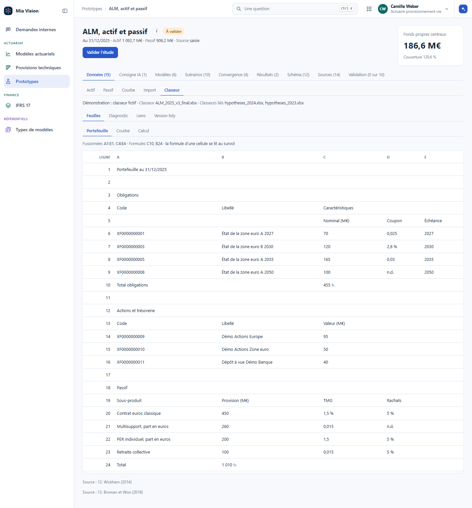
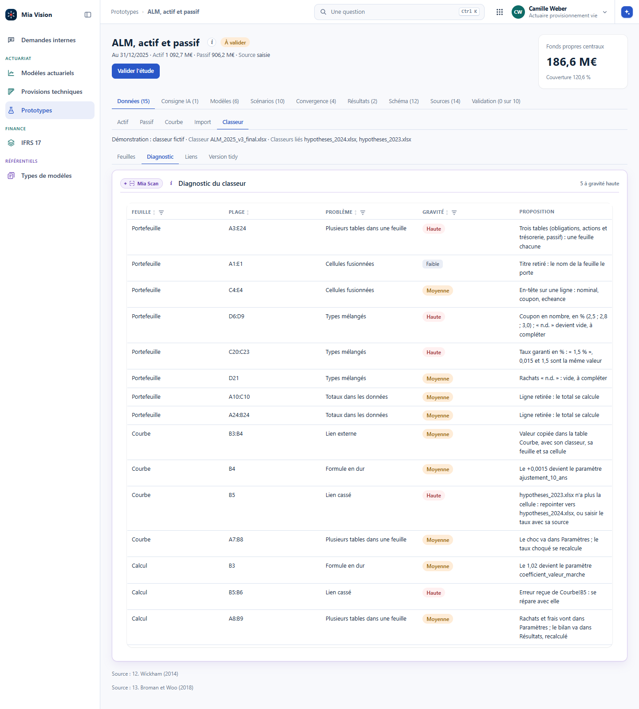
Le classeur, diagnostiqué suite
Dans Vision : #/alm?ong=donnees&part=classeur, au poste d'actuaire provisionnement vie, puis Feuilles, Diagnostic, Liens et Version tidy. La lecture du classeur est écrite d'avance pour la formation, et le « i » du bloc le dit.
La version propre, et son schéma
La version propre range le même contenu en tables : les données (obligations, actions et trésorerie, passif, courbe), les paramètres en format long (un paramètre, sa valeur, son unité, sa description), les résultats, et une table des versions à laquelle chaque ligne se rattache. « Appliquer », avec un motif obligatoire, reprend dans l'ALM ce qui s'y range. La reprise dit, ligne par ligne, l'avant, l'après, et pourquoi le reste n'est pas repris : un résultat ne se reprend pas, il se recalcule.
Le schéma relationnel, lui, ne s'invente pas en réunion : c'est le métier de la DSI, de celui qui construit la base. On le lit, on s'y range. Des clés disent les relations : un actif pointe vers son code CIC, un calcul vers les versions des modèles qu'il emploie. L'ALM, le taux servi, la RC professionnelle et le transport ont chacun un onglet Schéma : on clique une table, on voit ses colonnes, leur type et leur clé, puis ses lignes. Un classeur bien fait, c'est ce schéma.
La version propre, et son schéma suite
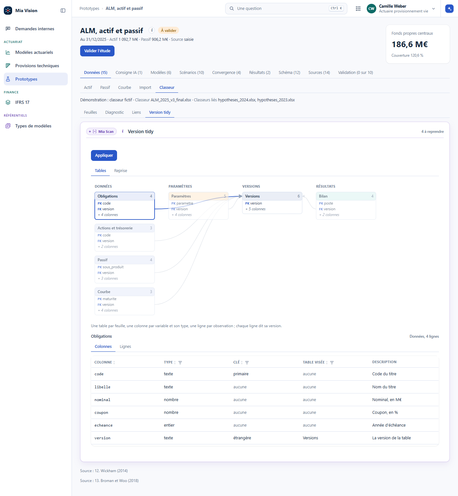
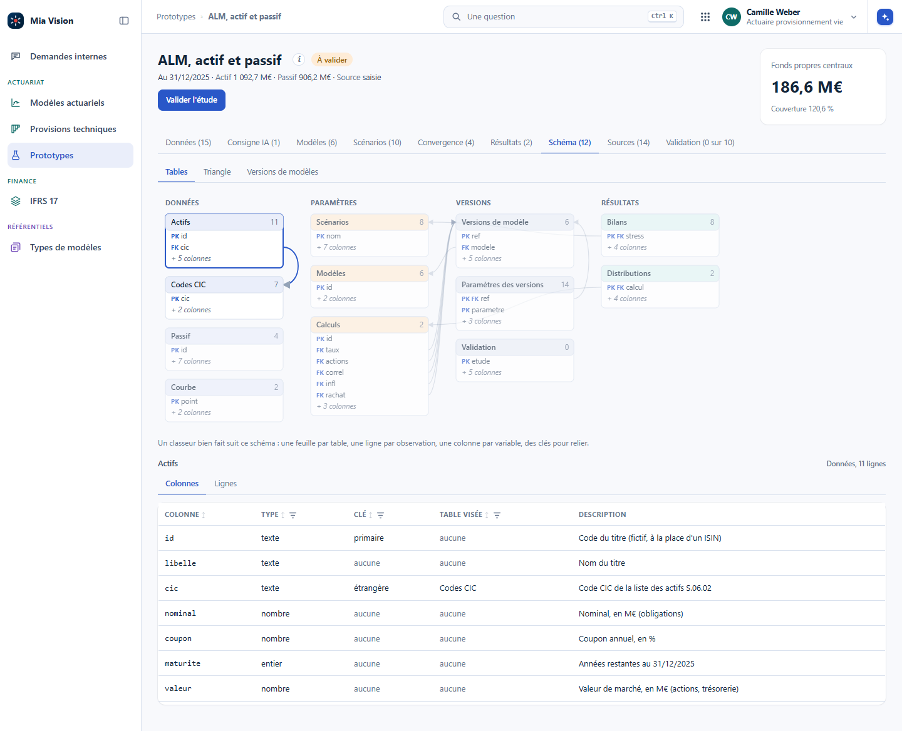
La version propre, et son schéma suite
Dans Vision : #/alm?ong=schema. Le même onglet existe au taux servi, à la RC professionnelle et au transport.
Le triangle est une vue, pas une table
Ce n'est pas évident, et c'est l'exemple qui le montre le mieux. Le triangle de sinistralité, tel qu'on le regarde, n'est pas structuré : l'année de survenance en ligne, l'âge en colonne, les montants dans les cases. C'est la vue d'une table qui a une ligne par survenance et par âge, avec ses colonnes branche, arrêté, origine, développement et montant. Le triangle est le tableau croisé de cette table.
Le triangle est une vue, pas une table suite
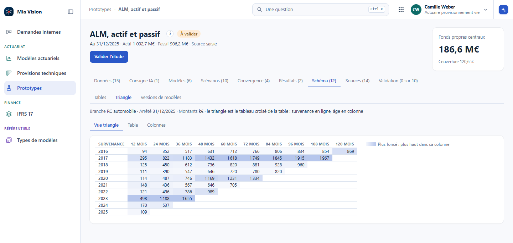
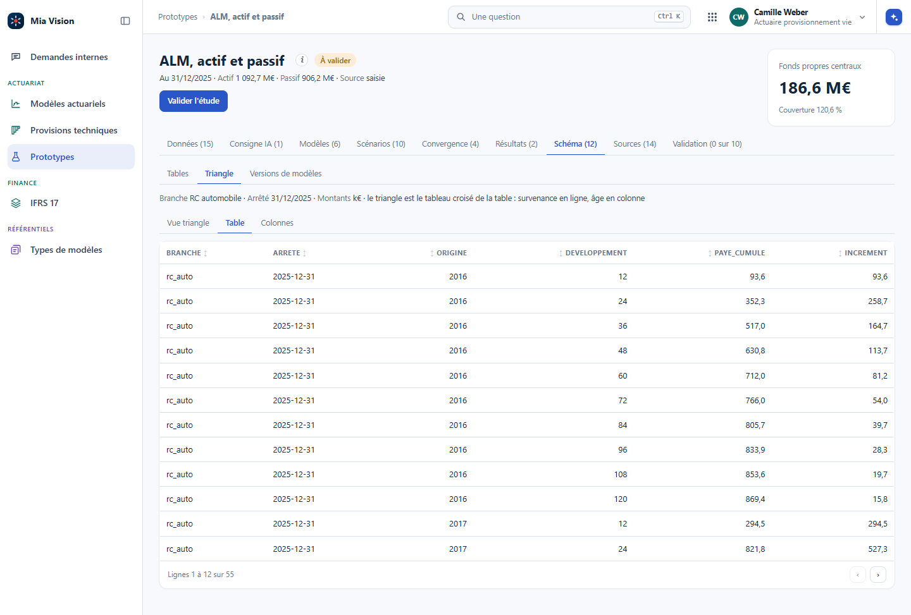
Le triangle est donc le front-end, un affichage : une image, graphique, de la façon dont les sinistres se développent. La table, et mieux encore le développement de chaque sinistre, c'est le back-end : le découpage du chapitre Base de données, API, interface.
Le triangle est une vue, pas une table suite
Dans Vision : #/alm?ong=schema&sch=triangle, puis Vue triangle et Table. Versionner les modèles et les résultats suit la même idée, même si ce n'est pas toujours intuitif : le chapitre Versionner les résultats le montre.
On veut ajouter la branche RC générale à côté de la RC automobile. Que faut-il faire dans la vue triangle, et que faut-il faire dans la table ?
Voir la réponse
Dans la vue, un deuxième triangle, souvent une feuille de plus, et des formules à recopier. Dans la table, des lignes de plus avec branche = rc_generale, et rien d'autre ne change : le triangle de chaque branche est le même tableau croisé, filtré sur sa branche. Comparer deux arrêtés se fait de la même façon, avec la colonne arrêté.
Granulaire, c'est toujours mieux
Structuré, le triangle devient une table : année de survenance, année de développement, montant. Mieux encore, la date de survenance et la date de développement ; et pour être très fin, une date de développement par sinistre. Structurer ainsi n'est pas toujours évident, il faut un peu réfléchir.
La règle qui suit est simple : on stocke toujours la donnée granulaire plutôt que l'agrégat. Depuis le développement de chaque sinistre, on peut toujours refaire le triangle global ; depuis le triangle, on ne retrouve jamais les sinistres. Certains disent « pour certains sinistres, on ne peut pas » : on enregistre quand même, puis on explore et on extrapole. Et chaque sinistre porte beaucoup de variables, la garantie, le type de dommage, l'âge du dossier, qui permettent des modèles actuariels bien meilleurs, jusqu'à l'apprentissage automatique qui estime le développement de chaque sinistre à partir de ses caractéristiques (Wüthrich, 2018).
Pourquoi garder le développement de chaque sinistre plutôt que le triangle ?
Voir la réponse
Parce que le chemin ne va que dans un sens : la somme des sinistres donne le triangle, le triangle ne redonne pas les sinistres. Avec les sinistres, on refait le triangle de n'importe quel découpage (par garantie, par région, par tranche de montant) sans nouvelle extraction, on isole les graves, et on peut estimer le développement de chaque dossier à partir de ses caractéristiques. Avec le triangle seul, tout cela est perdu au moment de l'agrégation.
Ce que l'IA voit d'un classeur
Tout le monde a voulu un jour utiliser l'IA sur ses fichiers Excel, ou sur ses présentations, et pendant longtemps c'est resté compliqué. Ce qui arrive maintenant le dit bien : les assistants du tableur, celui d'Excel comme Gemini dans Google Sheets, demandent d'abord une plage, et cette plage est le plus souvent un tableau. Ensuite seulement, on pose ses questions.
Autrement dit, même pour l'IA, un classeur mal structuré est difficile à aider. C'est la règle qu'on répète en data science, garbage in, garbage out, et elle vaut pour un classeur comme pour un modèle : mal structuré, chaque analyse est une galère et rien ne s'automatise ; bien structuré, les requêtes et les analyses viennent facilement.
Un onglet de plus, qu'on appelle Documentation ou Dictionnaire, décrit chaque onglet et chaque variable : ce que représente une ligne, ce que veut dire chaque colonne, dans quelle unité. Pour l'IA, c'est ce qui change tout : elle comprend le classeur et va chercher la bonne donnée tout de suite. C'est le dictionnaire de données, posé dans le classeur lui-même.
L'IA peut aussi faire une partie du rangement : analyser chaque onglet, finement, et proposer sa structure, comme le diagnostic plus haut. Le pivot ne change pas : arriver à des données bien structurées. Ce travail d'organisation se fait une fois ; ensuite, on automatise.
Au-delà des actuaires : les actes anciens
La même lecture sert ailleurs. Les notaires reçoivent beaucoup d'actes anciens, mal faits, avec des tableaux et du texte manuscrit. L'IA peut aider à analyser leur contenu, à extraire les tableaux et à récupérer l'information, chaque valeur gardant le renvoi à la page d'où elle vient. C'est le travail de Mia Scan sur un document, et c'est un service à proposer. Vision n'a pas encore d'écran pour ce cas.
Prenez le classeur de votre dernier arrêté. Comptez les feuilles qui portent plus d'une table, les cellules fusionnées, les totaux écrits dans les données, et les liens vers d'autres fichiers. Lequel de ces liens est encore valide ?
Ce qu'on trouve souvent
Une feuille de synthèse qui mêle données, paramètres et résultats, un lien vers le classeur de l'an dernier qui pointe encore vers un fichier déplacé, et un paramètre écrit en dur dans une formule. Ce sont les trois premiers constats que le diagnostic de Vision classe en gravité haute ou moyenne.
Ce qu'il faut garder
- Les données propres sont toutes propres de la même façon : une table par feuille, une variable par colonne, une observation par ligne.
- Le remède au classeur mal rangé est la structure ; l'IA aide à trouver les tables, à réparer les liens, à proposer la version propre.
- Le schéma relationnel se lit chez celui qui fait la base ; un classeur bien fait suit ce schéma.
- Le triangle est le tableau croisé d'une table ; c'est la table qu'on garde.
- Granulaire, c'est toujours mieux : le développement de chaque sinistre refait le triangle, jamais l'inverse.
Sources
- Wickham, H. (2014), Tidy Data, Journal of Statistical Software 59(10), 1-23.
- Broman, K. W. et Woo, K. H. (2018), Data Organization in Spreadsheets, The American Statistician 72(1), 2-10.
- Wüthrich, M. V. (2018), Machine learning in individual claims reserving, Scandinavian Actuarial Journal 2018(6), 465-480.
2.1.3 Base de données, API, interface
Dans un classeur Excel, on peut déjà avoir un back et un front. Des onglets de tables propres, à part ; un onglet qui rassemble, pour une clé, ce qu'il faut sur une ligne ; et un onglet joli, fait pour être lu. C'est ce que l'informatique appelle base de données, API et interface, et c'est comme ça que se fait le génie industriel.
- Trois couches dans un classeur
- Base de données, API, interface
- Dans Vision
- Le concept compte plus que l'outil
- Diviser : un principe ancien
- La frontière
- Ce qu'il faut garder
- Sources
Trois couches dans un classeur
- La couche données
Des onglets de tables propres, une table par onglet : les clients, les contrats, les devises.
- La couche intermédiaire
Un onglet qui, pour une clé (l'identifiant d'un client, une devise pour un taux de conversion), récupère sur une même ligne toutes les informations, par des RECHERCHEV. Plusieurs si besoin : le client, puis son contrat dans une autre table, puis le cours de sa devise. Ce sont presque des jointures.
- La couche interface
Un onglet joli et convivial, cellules fusionnées et couleurs comme on veut. Mais chaque case pointe vers une cellule précise de la ligne intermédiaire.
Sans couche intermédiaire, les formules de l'interface deviennent énormes : chaque case refait sa recherche, et personne ne peut plus les relire. De petites formules dans l'interface ne sont pas interdites, il n'y a pas de règle absolue ; ce qui compte, c'est que la recherche se fasse à un seul endroit. Un calcul, lui, a son propre onglet entre la liaison et l'écran : le chapitre suivant le montre, une étape par ligne.
Trois couches dans un classeur suite
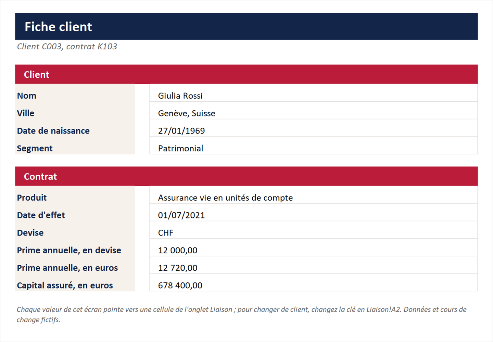

La ligne de l'onglet Liaison, telle qu'Excel l'affiche en français : la clé en A2, puis une recherche par cellule.
Trois couches dans un classeur suite
A2 C003 la clé, choisie dans la liste des clients
B2 =RECHERCHEV($A$2;Clients!$A$2:$G$7;2;FAUX) le nom du client
H2 =INDEX(Contrats!$A$2:$A$7;EQUIV($A$2;Contrats!$B$2:$B$7;0))
le contrat du client : sa clé n'est pas en 1re colonne
I2 =RECHERCHEV($H$2;Contrats!$A$2:$G$7;3;FAUX) le produit du contrat
N2 =RECHERCHEV($K$2;Devises!$A$2:$D$5;3;FAUX) le cours de la devise du contrat
O2 =L2*N2 la prime en eurosTélécharger le classeur d'exemple
Changez la clé dans l'onglet Liaison, cellule A2 : prenez C005. Que devient l'écran ? Puis ajoutez une devise dans l'onglet Devises et un contrat qui l'emploie : quelles formules faut-il changer ?
Voir la réponse
L'écran montre Emma Taylor, son contrat de prévoyance en livres sterling, et sa prime convertie en euros : rien n'a été touché dans l'écran. Pour la nouvelle devise, il faut élargir les plages des recherches, qui s'arrêtent à la dernière ligne de chaque table. En mettant chaque table sous forme de tableau Excel, et en écrivant les recherches sur le nom du tableau, les plages suivent les tables toutes seules : c'est un premier pas vers une vraie base.
Base de données, API, interface
Bien séparés, ce sont les trois pièces d'un outil. La base de données, ce sont des tables relationnelles structurées. L'API, c'est une fonction : je donne un input, je récupère un output. L'interface, c'est ce que l'utilisateur voit et touche.
Les tables et les calculs. La cuisine reste en cuisine : le client ne voit pas comment le plat se fait.
L'API : il prend la commande et rapporte le plat. Une commande précise, un plat précis.
L'interface : c'est la table du client. On ne fait pas la cuisine dans la salle.
Une page HTML avec du JavaScript peut tout mélanger, comme un classeur. Ça dépend du projet : pour un petit calcul, ce n'est pas grave. Pour un outil de tarification ou un outil ALM, on ne bricole pas.
Dans Vision
Vision suit ce découpage. La base, ce sont ses tables, documentées une par une : la clé, les colonnes, la source de vérité, qui écrit et qui lit. Le poste DSI les montre dans l'écran Données, avec leur schéma. Le calcul vit dans des moteurs à part, les fonctions CL_ (triangles, GLM, mortalité, simulation, solvabilité) : ni écran ni mémoire, des entrées et des sorties en objets simples, et chacune se vérifie sur des cas connus sans ouvrir Vision. C'est la cuisine et son serveur. Les écrans, l'atelier, l'ALM, sont la salle : ils appellent les moteurs et montrent ce qu'ils rendent.
Dans Vision suite
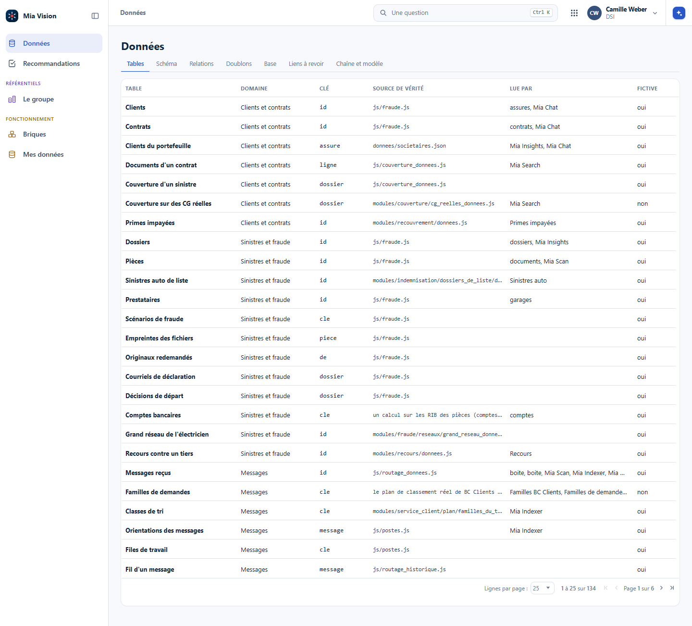
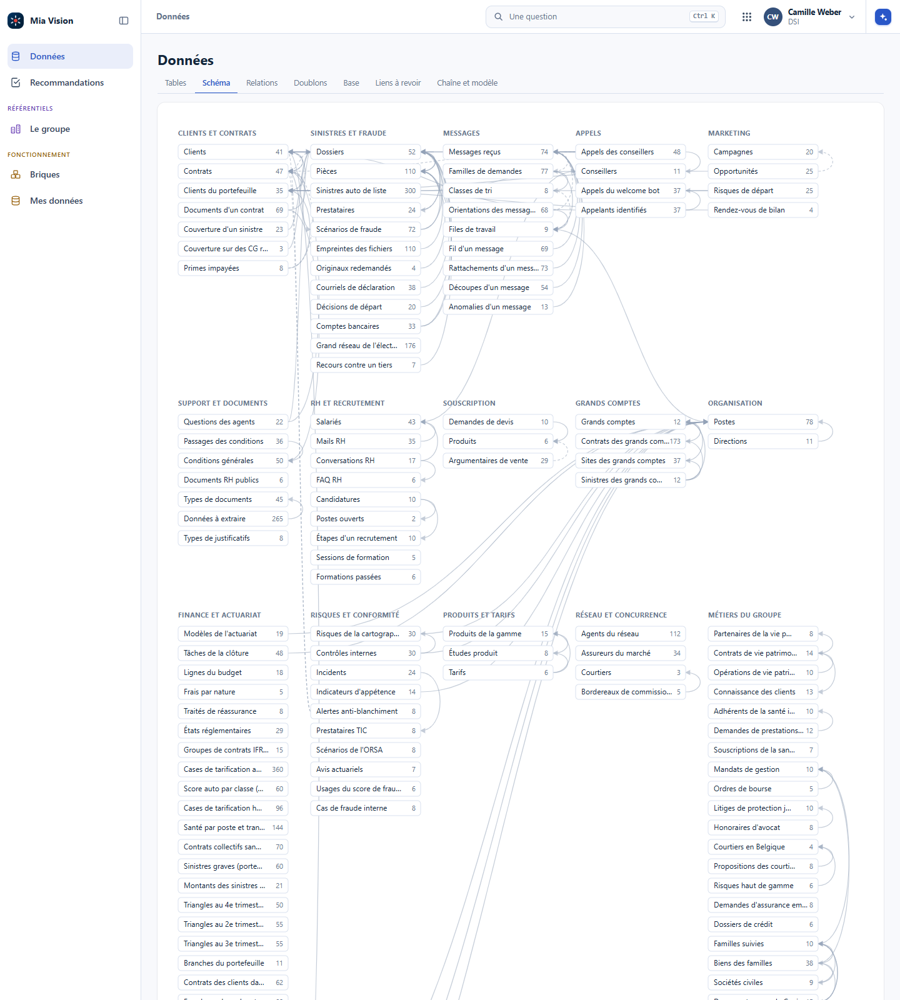
Dans Vision suite
Dans Vision : #/dsi, au poste DSI, puis l'onglet Schéma.
Le concept compte plus que l'outil
Appliquez le découpage même dans Excel : la transition vers de vrais outils sera douce, parce que les tables, les recherches et l'écran seront déjà séparés. Les limites d'Excel arrivent ensuite d'elles-mêmes.
- Plusieurs personnes dans le même fichier : c'est le bazar. Une base de données est faite pour ça.
- Le volume : les résultats d'un Monte-Carlo font des millions de lignes, au-delà de ce qu'une feuille tient.
- Les graphiques interactifs, les animations, que l'interface d'un outil fait sans peine.
- Les droits d'accès : qui lit, qui écrit, qui valide.
Les sorties d'une API sont souvent du JSON, des données structurées : un bilan entier tient dans un JSON. Ou du XML : les états QRT remis en XBRL sont du XML. Avec l'IA, on peut donner le classeur et demander « fais-moi une interface jolie » : on continue à manipuler les données dans Excel, et l'interface n'est plus Excel. Le but n'est pas de se passer d'Excel.
Diviser : un principe ancien
La modularité ne date pas de l'informatique. Descartes, dans le Discours de la méthode (1637), en fait son deuxième précepte : « diviser chacune des difficultés que j'examinerais, en autant de parcelles qu'il se pourrait, et qu'il serait requis pour les mieux résoudre ». En développement, il y a des développeurs front-end et des développeurs back-end, et entre eux un contrat d'interface, l'API : tu me donnes tel input, je te rends tel output ; ce que je fais dans ma cuisine ne te regarde pas.
La frontière
Où mettre un calcul ? Une moyenne de dix nombres affichés à l'écran, back ou front ? Ça dépend du besoin : s'il y a des valeurs manquantes, une pondération, la moyenne a des règles, et ces règles se décident une fois. C'est une petite question. Un calcul actuariel complexe, lui, va côté back-end : c'est le chapitre suivant, Calculer dans le back, stocker les résultats.
L'écran d'un outil de tarification affiche la prime moyenne d'un segment, calculée dans la page à partir des primes affichées. Qu'est-ce qui peut mal tourner ?
Voir la réponse
L'écran n'affiche souvent qu'une page de la table, ou une liste filtrée : la moyenne ne porte alors que sur ce qui est visible. Et une prime moyenne se pondère, par l'exposition par exemple. Les deux règles, sur quoi on moyenne et avec quel poids, se décident une fois dans le back, et l'écran affiche le résultat.
Ce qu'il faut garder
- Trois couches, même dans Excel : des tables, une ligne de recherches pour une clé, un écran qui pointe vers cette ligne.
- Base de données, API, interface : la cuisine reste en cuisine, le serveur prend la commande, la salle est pour le client.
- Le concept compte plus que l'outil, et le but n'est pas de se passer d'Excel.
- Un petit calcul peut vivre dans l'écran ; un calcul actuariel va dans le back.
Sources
- Descartes, R. (1637), Discours de la méthode, deuxième partie : les quatre préceptes.
- Wickham, H. (2014), Tidy Data, Journal of Statistical Software 59(10), 1-23 : les tables de la couche données.
- Règlement d'exécution (UE) 2023/894 : les états QRT et leur remise en XML (XBRL).
2.1.4 Calculer dans le back, stocker les résultats
Le back-end est toujours structuré en base de données. Le calcul, lui, peut se faire d'un côté ou de l'autre selon sa complexité, et il n'y a pas de bonne réponse unique. Mais un calcul complexe va très souvent côté back-end, dans l'API : vue de l'interface, c'est une fonction, et elle peut cacher des choses très complexes.
- Un exemple : la calibration
- Montrer un calcul : une fonction
- Stocker plutôt que recalculer
- Dans Vision
- Ce qu'il faut garder
- Sources
Un exemple : la calibration
On a une série de dix, cent nombres ou plus. Calibrer, c'est trouver les paramètres d'une loi actuarielle sur ces données d'apprentissage : la loi de coût des sinistres, la loi de rachat. C'est un calcul complexe, avec ses choix et ses contrôles : il va dans le back. L'interface envoie la série et reçoit les paramètres, avec de quoi juger l'ajustement.
La méthode elle-même se versionne : le maximum de vraisemblance et la méthode des moments ne donnent pas les mêmes paramètres sur la même série. On garde les deux, on compare leurs résultats, et tout se stocke.
Montrer un calcul : une fonction
Les entrées restent structurées. Plutôt qu'une formule très longue, un onglet de calcul intermédiaire montre exactement chaque étape. Il est lui aussi structuré et indépendant, avec ses entrées et sa sortie déclarées : c'est exactement une fonction, ce qu'on écrirait en Python avec def. Dans Excel, on peut le montrer joliment avec des flèches : les entrées, une flèche, récupérer la devise, une flèche, récupérer le cours, et à la fin le résultat. Un autre onglet garde proprement les entrées et la sortie de chaque calcul fait.
Montrer un calcul : une fonction suite


Montrer un calcul : une fonction suite
Chaque onglet a un objectif précis, et il y en a trois sortes : les données, le calcul, l'affichage. Dans le classeur d'exemple, Clients, Contrats et Devises sont les données ; Liaison et Calcul, le calcul ; Écran, l'affichage. C'est ainsi que se développent les logiciels complexes : base de données, API, interface. Le chapitre Construire un outil actuariel le montre sur une vraie application, avec qui tient chaque couche et comment on la vérifie.
Stocker plutôt que recalculer
Recalculer à la volée ou stocker, c'est une décision. Mais stocker vaut mieux, pour la traçabilité, et c'est l'esprit de Solvabilité II : le calcul a été fait à telle date, sur telles données, avec telle graine. Mêmes entrées et même graine : exactement le même résultat, à n'importe quel moment. Le chapitre Versionner les résultats en donne la forme, une ligne par exécution.
Même les résultats d'un Monte-Carlo se stockent : le stockage ne coûte presque plus rien. C'est aussi une question de latence : on ne peut pas régénérer tous les scénarios à chaque demande. On prépare le terrain, on simule ce qui est habituel, on stocke tout, et la distribution se donne tout de suite.
Dans Vision
L'atelier des modèles tient cette discipline. Une version figée garde ses paramètres, son résumé chiffré et l'empreinte de ses données ; elle ne change plus. Quand la fonction actuarielle la valide, l'atelier la recalcule d'abord, et refuse avec « Les chiffres ne se retrouvent pas » si le recalcul diffère du résumé figé. Le moteur de simulation exige une graine : sans elle, il s'arrête sur une erreur.
Pour la cotation livrée, 50 000 années simulées avec la graine 2026, Vision garde le résumé et de quoi retirer exactement les mêmes années. La table longue des sinistres simulés se refait à l'ouverture de l'onglet Tirages, en vérifiant que la charge moyenne retrouvée est celle du calcul, et s'exporte en CSV. Les deux voies tiennent la même promesse : le même chiffre, à n'importe quel moment. Dans l'ALM, les calculs R1 et R2 gardent de même leur graine et les versions des modèles qu'ils emploient.
Dans Vision suite
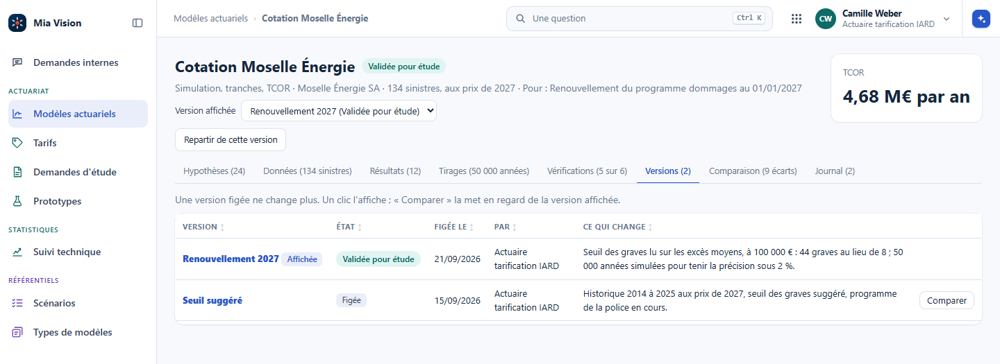
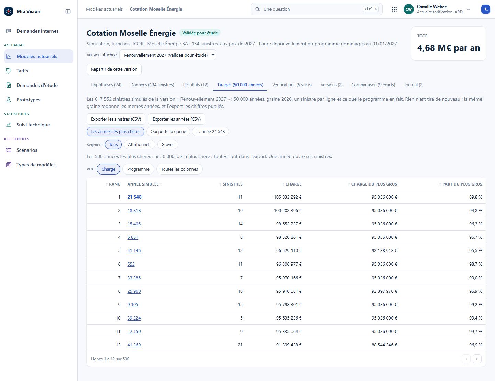
Dans Vision : #/modeles/cotation-moselle?ong=versions, au poste d'actuaire tarification IARD, puis l'onglet Tirages.
Dans Vision suite
Pourquoi imposer une graine, plutôt que de laisser le générateur partir de l'horloge ?
Voir la réponse
Sans graine, deux lancements donnent deux chiffres, et personne ne peut dire si un écart vient d'une hypothèse ou du hasard. Avec elle, le même calcul redonne le même chiffre : le validateur le recalcule et le retrouve, l'auditeur le rejoue un an plus tard, et deux variantes sur la même graine isolent l'effet de l'hypothèse qui change. La graine ne rend pas le calcul plus juste ; elle le rend vérifiable.
On stocke le résumé d'une version et sa graine, pas la table longue des sinistres simulés. Est-ce assez pour la traçabilité ?
Voir la réponse
Oui, à une condition : que le code qui retire les années soit lui aussi figé, avec sa version. Mêmes données, même graine, même code : la table revient à l'identique, et Vision le vérifie sur la charge moyenne. Si le code peut changer, il faut stocker la table, ou au moins les quantiles publiés.
L'IA générative est presque un prétexte. Il s'agit d'utiliser sa puissance pour revoir le métier d'actuaire : ranger les données, séparer le calcul de l'affichage, garder chaque résultat. Tout cela pourrait se dire sans IA générative, mais ce serait plus difficile à faire. Et si on le dit bien à l'IA, ce sera bien fait.
Ce qu'il faut garder
- Le back-end est structuré en base ; un calcul complexe, comme une calibration, va dans le back, derrière une fonction.
- Un calcul se montre comme une fonction : des entrées déclarées, des étapes, une sortie, et un journal de chaque calcul fait.
- Stocker plutôt que recalculer : la date, les données, la graine, et le même résultat à n'importe quel moment.
- Les méthodes se versionnent comme les modèles, et leurs résultats se comparent.
- Les simulations se préparent et se stockent : la distribution se donne tout de suite.
Sources
- Directive 2009/138/CE (Solvabilité II).
- Glasserman, P. (2003), Monte Carlo Methods in Financial Engineering, Springer : les générateurs et la reproductibilité des tirages.
- Klugman, S. A., Panjer, H. H. et Willmot, G. E., Loss Models: From Data to Decisions, Wiley : maximum de vraisemblance et méthode des moments.
2.1.5 Construire un outil actuariel : paquet, back-end, interface
Une application comme TCOR a été faite avec Electron, un outil qui fabrique des applications de bureau avec les techniques du web : chaque poste l'installe. Il est important de la refaire en plateforme SaaS, ouverte dans le navigateur, et de toujours séparer les couches. C'est le découpage du chapitre Base de données, API, interface, sur un vrai outil, avec pour chaque couche deux questions : qui la tient, et comment on la vérifie.
- Trois couches, et qui les tient
- Le paquet : un contrat, des cas de référence
- Le back-end : le schéma rendu visible
- L'interface : voir ce qu'on doit voir
- Dans Vision
- L'IA, le développement, et l'actuaire garant
- Questions
- Ce qu'il faut garder
Trois couches, et qui les tient
Trois couches, et qui les tient suite
- Le paquet Python
Une calibration, c'est du Python classique. C'est à la portée des actuaires, et c'est même leur métier : vérifier, choisir les paquets pour la calibration, parfois écrire la fonction soi-même. C'est très actuariel, même une moyenne. Tout ce qui est as-if doit être vérifié. Le paquet est adapté à l'entreprise, avec ses entrées.
- Le back-end
D'abord l'organisation des données : le schéma, qu'il faut rendre visible. Comment les sinistres, l'inflation et l'exposition se relient, comment ils sont stockés, quelles informations on garde, comment on s'en sert. Puis les calculs : comment on obtient les résultats, et comment on les stocke en base. Le back-end doit être maîtrisé par les actuaires ; pour le programmer, mieux vaut travailler avec un développeur.
- L'interface
Si on voit ce qu'on doit voir, ça suffit. Ne pas regarder le code derrière, c'est beaucoup moins un problème. La partie calcul, elle, doit être vérifiée, et on n'a pas besoin de l'interface pour ça : « voilà mes inputs, qu'est-ce que tu fais comme output ? », plusieurs fois. C'est un travail classique. Pour l'interface, travailler avec quelqu'un du front, c'est mieux.
C'est le processus de création d'un outil. TCOR calcule le coût total du risque d'un client : il importe ses sinistres, les ramène en as-if aux prix d'une année de référence, calibre la fréquence et la sévérité, simule des années, et tarifie un programme en tranches. Son code a déjà ses trois couches, chacune dans son dossier.
Trois couches, et qui les tient suite
src/front/ l'interface : les écrans, les graphiques
src/back/ le back-end
db/schema.sql le schéma de la base SQLite
services/ ce que le back calcule lui-même, dont l'as-if
calc.js le pont vers Python
python/ le paquet et son contrat
runner.py lit un JSON, rend un JSON
tcor_runner/actions/ une action par calcul (calibrate, simulate...)
vendor/tcor/ le paquet actuariel : calibration, simulation
tests/golden/ les cas de référence : entrée, sortie attendueLe paquet : un contrat, des cas de référence
Le paquet tcor est la copie d'un paquet actuariel écrit à part. Une couche fine, tcor_runner, en fait des actions : une action par calcul, chacune une fonction qui prend un dictionnaire et en rend un. Le back-end l'appelle comme une fonction : il lance Python, écrit un JSON sur son entrée, lit un JSON sur sa sortie. Rien d'autre ne passe, ni base, ni écran. Voici l'entrée d'une calibration, sur un client fictif.
{"action": "calibrate", "client": "ACME",
"params": {"client_name": "ACME", "bool_attri": "non"},
"claims": [{"client": "ACME", "annee": 2010, "montant": 40435.2},
{"client": "ACME", "annee": 2011, "montant": 21715.35},
...]}Et sa sortie, réduite à deux lignes.
{"ok": true,
"result": {
"counts": {"global": 200},
"frequency": [
{"freq_dist": "Poisson", "freq_method": "mle",
"freq_p1": 16.6666666667, "AIC": 58.0917693468, "choice": 0},
...],
"severity": [
{"sev_dist": "Log Normale tronquée", "sev_method": "mle",
"sev_p1": 1.045541386, "sev_p3": 21232.3117621994,
"p_ks": 0.374071115, "choice": 1},
...]}}Le paquet : un contrat, des cas de référence suite
Pour chaque loi et chaque méthode, la sortie donne les paramètres, les critères, et la loi retenue (choice vaut 1). Le paramètre de la loi de Poisson est la moyenne du nombre de sinistres par an : deux cents sinistres sur douze ans, \(\hat{\lambda} = 200/12 \approx 16{,}67\). Très actuariel, même une moyenne : c'est l'actuaire qui sait que ce nombre doit sortir. Une erreur revient aussi en JSON, avec "ok": false et son message.
Chaque action a ses cas de référence, rangés par paires : une entrée, la sortie attendue. Un script rejoue chaque entrée et compare la sortie, à l'octet près, à celle qui est rangée à côté. Les cas couvrent le normal et les bords : un seul sinistre, des montants tous égaux, des montants négatifs ou nuls, un montant manquant, une liste vide.
python/tests/golden/calibrate/
normal-200.input.json normal-200.expected.json
1-sinistre.input.json 1-sinistre.expected.json
montants-identiques.input.json montants-identiques.expected.json
...
python scripts/golden/golden_master.py checkLa règle est écrite en tête du script : un cas qui casse, c'est un bug à corriger ou une modification à défaire, jamais une sortie attendue qu'on met à jour. Les sorties ne valent qu'avec les versions figées des paquets Python (numpy, scipy, pandas) : l'environnement fait partie du contrat. À côté, des classeurs de référence de l'actuaire : l'application doit retrouver, au centime, l'as-if calculé dans le classeur. C'est « voilà mes inputs, qu'est-ce que tu fais comme output ? », rejoué à chaque changement. Les familles de tests sont au chapitre Organiser les algorithmes.
Le back-end : le schéma rendu visible
src/back/db/schema.sql. Ses tables principales, rangées comme le fichier lui-même : les entrées, l'étude, les résultats. Un projet réunit ses clients par une table de liaison, projet_client, et choisit sa série d'inflation par son nom.Le back-end : le schéma rendu visible suite
Le schéma dit les relations que le formateur demande de rendre visibles. Le cœur d'un sinistre est minimal : un client, une année, un montant ; la segmentation (branche, type, région) passe par un catalogue de variables propre à chaque client, plutôt que par des colonnes dont le sens changerait d'un client à l'autre. Un sinistre et une exposition appartiennent à un client ; l'exposition a plusieurs séries (chiffre d'affaires, nombre de sites), et une série en euros est d'abord revalorisée. L'inflation n'appartient à personne : ses séries sont partagées, et le projet choisit la sienne, avec son année de référence. Le facteur as-if d'un sinistre en découle : l'indice de l'année de référence divisé par celui de l'année du sinistre, \(I_r / I_a\).
Côté résultats, chaque modélisation garde ses paramètres figés et son état, même quand le calcul a échoué ; les lois calibrées, la dernière simulation et la dernière tarification pointent vers elle. La simulation est gardée avec les paramètres qui l'ont produite, pour savoir quand elle est périmée.
L'interface : voir ce qu'on doit voir
L'interface de TCOR, ce sont des écrans : les projets, les clients, l'import, l'inflation, puis, dans un projet, l'exploration, la calibration, la simulation, la tarification. Elle parle au back-end par un pont unique, window.api : une fonction par demande. Un écran se vérifie en le regardant, à condition que le calcul ne s'y cache pas.
TCOR montre pourquoi. L'écran d'exploration recalcule l'as-if dans la page ; la calibration le recalcule dans le back-end. Les deux copies ont divergé sur une règle : un sinistre égal à la limite basse (les montants inconnus, enregistrés à 5 €) était compté par l'une, écarté par l'autre. La règle est maintenant la même, et un test la tient contre le classeur de référence de l'actuaire. Le paquet, lui, a sa fonction d'inflation, que rien n'appelle. Un calcul vit à un seul endroit, dans le paquet, et les écrans montrent son résultat.
Dans Vision
Vision suit les mêmes couches, et chacune se vérifie à sa façon.
- Le calcul : les moteurs
CL_(triangles, lois, simulation, tranches...) sont écrits en JavaScript pour tourner dans la page, et ils sont purs : ni écran, ni horloge, des entrées et des sorties. Un contrôle les charge seuls dans une page vierge et rejoue des cas connus, pris dans la littérature (Taylor et Ashe, Mack), dans les textes, ou recalculés en Python, à part du moteur. Puis il glisse une faute dans un moteur et vérifie que les cas tombent. - L'as-if : pour la cotation de Moselle Énergie, la reprise de TCOR dans Vision, le contrôle vérifie que le coefficient de l'année \(a\) vaut \((1+i)^{r-a}\), pour l'année de référence \(r\) et un taux d'indexation \(i\) constant, et que la charge as-if égale celle recomptée en Python sur les sinistres du compte. Sa faute met l'exposant à l'envers.
- Le schéma : chaque rubrique d'actuariat a son onglet Schéma, les tables, leurs clés, leurs liens ; et « Mes données », au menu de chaque poste, tire de ses écrans le schéma de ce que le poste lit et écrit.
- Les résultats : TCOR garde la dernière simulation de chaque modélisation ; Vision range chaque résultat avec l'identifiant de son jeu d'entrées, comme au chapitre La traçabilité : des jeux d'entrées et leurs résultats.
Dans Vision : #/rc-avocats?ong=schema et #/modeles/cotation-moselle?ong=resultats, au poste d'actuaire tarification IARD ; #/donnees pour Mes données.
Dans Vision suite
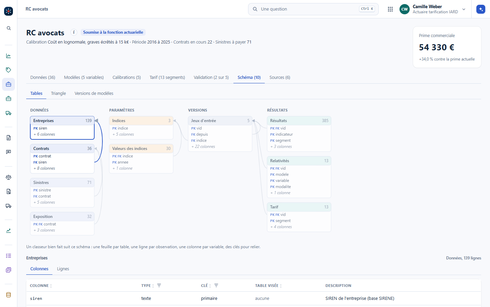
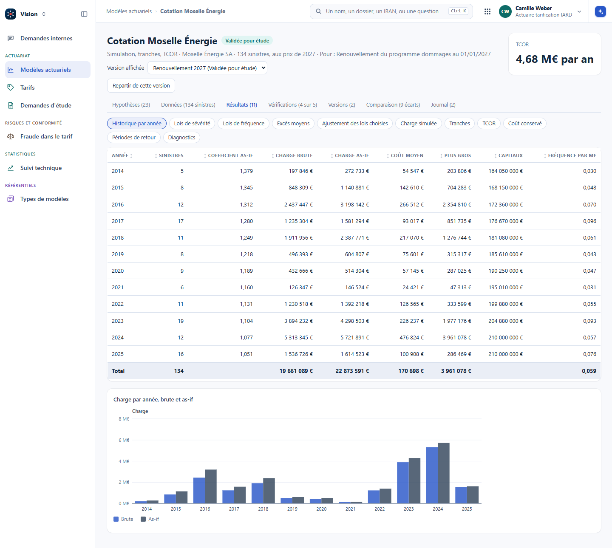
L'IA, le développement, et l'actuaire garant
Je suis convaincu que l'IA est en train de bouleverser le monde du développement : tout le monde est développeur. Pas forcément pour les actuaires : il y a derrière un métier technique précis, et les actuaires sont garants des résultats.
Pour l'interface, l'expérience utilisateur et le reste, il y a une vraie question : on a beaucoup moins besoin des développeurs front et des spécialistes de l'expérience utilisateur pour construire ça.
Questions
Qui vérifie la fonction d'as-if, et comment, sans ouvrir l'interface ?
Voir la réponse
L'actuaire, par ses entrées et ses sorties. Un sinistre de 100 000 € survenu en 2020, un indice qui monte de 3 % par an, l'année de référence 2025 : il attend \(100\,000 \times 1{,}03^{5} \approx 115\,927{,}41\) €. Si la fonction rend 86 260,88 €, l'exposant est à l'envers. Il ajoute un sinistre de l'année de référence, dont le coefficient vaut 1, et range ces cas parmi les cas de référence, rejoués à chaque changement. C'est ce que fait le contrôle de la cotation dans Vision, et sa faute est justement l'exposant à l'envers. Dans TCOR, l'application doit en plus retrouver au centime l'as-if du classeur de l'actuaire.
Sur le cas de référence de la calibration, le paquet retient pour la fréquence une loi binomiale de paramètre \(n = 17\), que l'AIC préfère nettement à la loi de Poisson. Faut-il la garder ?
Voir la réponse
Pas pour un tarif. Les sinistres du cas sont trop réguliers : 17 par an de 2010 à 2017, 16 ensuite. La binomiale colle à ces données, et elle dit qu'il n'y aura jamais plus de 17 sinistres dans une année. Le code a fait ce qu'on lui demandait ; le choix de la loi est un jugement d'actuaire, et c'est lui qui en répond, pas l'interface ni le développeur. Ici, c'est un cas de test, fait pour vérifier que le calcul ne bouge pas.
Un écran de TCOR affiche une prime qui vous semble fausse. Par où commencez-vous ?
Voir la réponse
Par le calcul, sans l'écran. On reprend l'entrée que le back-end envoie au paquet, on relance le paquet, et on compare la sortie à ce qu'on attend. Si la sortie est juste, l'erreur est avant, dans le back-end (les sinistres retenus, l'as-if, la franchise), ou après, dans l'affichage. Si elle est fausse, elle est dans le paquet, et elle devient un nouveau cas de référence. Les couches séparées coupent la recherche en morceaux.
Ce qu'il faut garder
- Trois couches : le paquet, tenu par l'actuaire et vérifié par ses entrées et ses sorties ; le back-end, maîtrisé par l'actuaire et programmé avec un développeur, vérifié par son schéma et ses résultats stockés ; l'interface, faite avec un développeur front, vérifiée en la regardant.
- Le paquet se parle par un contrat, un JSON d'entrée et un JSON de sortie, et ses cas de référence se rejouent à chaque changement.
- Le schéma se rend visible : les sinistres, l'inflation, l'exposition, et chaque résultat relié à ce qui l'a produit.
- Un calcul vit à un seul endroit ; deux copies finissent par diverger.
- L'IA fait de chacun un développeur ; l'actuaire reste garant des résultats.
2.2 Comprendre et modéliser
- 2.2.1Comprendre une donnée nouvelle
- 2.2.2Modéliser : choisir, calibrer, valider
2.2.1 Comprendre une donnée nouvelle
Une bonne part du travail est dans la donnée, et la première heure décide du reste. Un jeu de données qu'on ne connaît pas se parcourt dans un ordre, avec des questions fixes, et c'est exactement le genre de travail où un assistant aide, à condition de ne pas lui donner ce qu'il ne doit pas voir.
- Ce qu'on ne colle jamais dans une conversation
- La première passe, dans l'ordre
- Préparer, et écrire pourquoi
- Ce qu'il faut garder
Ce qu'on ne colle jamais dans une conversation
Une erreur courante en exploration assistée : coller le jeu de données dans le chat. Trois raisons de ne jamais le faire, et elles tiennent toutes les trois.
Vos extractions portent des informations clients, des montants, des règles tarifaires que le cabinet ne diffuse pas. Les coller, c'est les envoyer dehors. L'engagement du fournisseur de ne pas s'en servir pour l'entraînement ne change rien au geste.
Un portefeuille de quelques centaines de milliers de polices ne tient dans aucune fenêtre de contexte. Le modèle en lit un bout arbitraire et conclut sur ce bout.
Même s'il tenait, il raisonnerait sur des lignes particulières au lieu de raisonner sur la distribution. Il vous parlerait du contrat 48 219.
Le schéma, c'est-à-dire les colonnes avec leur type et leur unité ; quelques lignes d'exemple, fabriquées ou choisies, pour qu'il voie la nature des valeurs ; et les statistiques univariées, les quantiles pour les colonnes numériques, les effectifs par modalité pour les autres. Avec ces trois éléments il raisonne sur la structure et il écrit le traitement. Le traitement s'exécute sur votre poste, mais tout ce que l'assistant lit ou affiche part chez le fournisseur : un aperçu, une erreur qui cite une valeur. Les données nominatives restent hors du dossier de travail ; on travaille en synthétique ou pseudonymisé.
La première passe, dans l'ordre
Les questions sont toujours les mêmes, et c'est ce qui permet de les déléguer. Vous validez chaque réponse avant de passer à la suivante.
- Quel est le grain, et combien de lignes par clé
Une ligne par quoi. Un identifiant qui apparaît deux fois est soit un avenant, soit une résiliation, soit une erreur d'import, et ce n'est pas la même suite.
- Quelles colonnes servent, lesquelles sont du décor
Souvent, une partie seulement des colonnes porte l'information. Les autres sont des codes techniques, des horodatages d'extraction, des champs vides depuis une migration.
- Que vaut un vide, colonne par colonne
Manquant légitime, le sinistre n'a pas eu lieu ; ou manquant suspect, la date devrait toujours être là. Jamais un remplissage global par zéro, qui maquille les deux.
- Les distributions, et ce qui cloche dedans
Âges négatifs, dates de sinistre dans le futur, codes non normalisés d'une table à l'autre, montants à zéro en masse. C'est là que se voit l'état réel de l'extraction.
- L'exposition, et comment elle se compte
Toute fréquence se rapporte à une exposition. Une fréquence en absolu ne veut rien dire, et c'est l'erreur qui survit le plus longtemps parce qu'elle a l'air d'un nombre.
Préparer, et écrire pourquoi
Vient ensuite la mise en forme pour la modélisation. Trois gestes, et un quatrième qu'on saute toujours.
| Geste | Ce qu'on fait | Ce qui se décide, et ne se délègue pas |
|---|---|---|
| Encoder | Les variables qualitatives deviennent exploitables par le modèle | Le regroupement des modalités rares, qui change le résultat |
| Découper | Les variables continues passent en bandes | Les bornes, qui doivent être défendables devant un contrôleur, pas optimales sur l'échantillon |
| Rapporter à l'exposition | Les comptes se rapportent à la durée de présence | L'unité, et le traitement des contrats entrés ou sortis en cours d'année |
| Écrire pourquoi | Chaque transformation porte sa raison, dans le code | Rien, et c'est pour ça qu'on l'oublie. Dans six mois, personne ne saura pourquoi cette valeur a été imputée à la médiane |
Préparer, et écrire pourquoi suite
« Voici le schéma de mes tables, le dictionnaire de données, et les statistiques univariées de chaque colonne. Dis-moi ce que tu comprends du grain, quelles colonnes sont exploitables, et quelles incohérences tu repères. Ne propose pas encore de modèle. »
La dernière phrase compte : sans elle, il part sur un GLM avant d'avoir regardé les données.
Ce qu'il faut garder
- On donne le schéma, des exemples et les distributions ; jamais le portefeuille. Ce que l'assistant lit ou affiche part chez le fournisseur.
- La première passe suit un ordre fixe, et c'est ce qui la rend délégable.
- Une fréquence se rapporte toujours à une exposition.
- Les bornes des bandes et les regroupements de modalités sont des décisions d'actuaire, défendables, pas optimales sur l'échantillon.
2.2.2 Modéliser : choisir, calibrer, valider
Le modèle n'est pas le sujet, la question l'est. Un assistant propose une technique en quelques secondes, et c'est précisément pour cela qu'il faut savoir d'où vient le choix, ce qui se calibre, ce qui se valide, et quels biais guettent. Ce chapitre est la partie du métier que l'IA accélère sans jamais la remplacer.
- Partir de la question, pas de la technique
- Le modèle d'apprentissage comme challenger, jamais seul
- Calibrer : les décisions qui changent le résultat
- Valider : ce qu'on regarde, dans l'ordre
- Les biais à surveiller
- Le même pattern, appliqué à la modélisation
- Où ça se pratique
- Ce qu'il faut garder
Partir de la question, pas de la technique
Avant de nommer une famille de modèles, trois éléments la déterminent presque entièrement : la nature de ce qu'on cherche à prédire, l'unité d'observation, et ce qu'on devra expliquer à un tiers.
Partir de la question, pas de la technique suite
| La question métier | Ce qu'on prédit | La famille qui va avec |
|---|---|---|
| Combien de sinistres par contrat et par an | Un compte, sur une durée d'exposition | GLM Poisson, avec l'exposition en décalage |
| Combien coûte un sinistre | Un montant positif, très étalé | GLM Gamma, lien logarithmique |
| Combien coûte un contrat sur l'année | Zéro souvent, un montant parfois | Tweedie, quand on ne veut pas séparer fréquence et coût |
| Qui résilie, et quand | Une durée, souvent censurée | Modèles de survie, Kaplan-Meier puis Cox |
| Qui accepte une offre | Un oui ou un non | Régression logistique, et ses variantes |
| Combien résilient si le prix monte | Une probabilité qui dépend de la hausse | Logistique avec la hausse en variable : l'élasticité, mesurée de préférence sur une hausse testée |
| Comment la sinistralité dérive dans le temps | Une série par période de survenance | Tendance estimée sur l'année, inflation séparée du volume ; Lee-Carter pour la mortalité |
| Des agences ou des régions qui se ressemblent | Une structure à plusieurs niveaux | Modèle mixte, effets aléatoires sur les groupes |
Partir de la question, pas de la technique suite
Deux remarques qui évitent des semaines perdues. Une fréquence ne se modélise jamais en absolu : c'est un compte rapporté à une exposition, et l'oubli du décalage est une erreur fréquente. Et une durée censurée, un contrat encore en cours à la date d'arrêté, ne se traite pas comme une durée observée : la jeter biaise vers le bas, la compter comme terminée biaise aussi.
Le modèle d'apprentissage comme challenger, jamais seul
Un gradient boosting bat souvent un GLM en performance brute. Il se défend mal en revue tarifaire, et il ne se corrige pas à la main quand un coefficient choque. La position qui tient : le GLM est la référence, le modèle d'apprentissage est le challenger, et l'écart entre les deux est l'information.
Ce que l'écart raconte
Si le challenger gagne beaucoup, il a trouvé une interaction ou une non-linéarité que le GLM n'a pas. On va la chercher, et on l'ajoute au GLM sous une forme explicable. Le gain reste, l'explication aussi.
Quand il ne gagne presque rien
C'est une information en soi : le GLM capte déjà le signal disponible. La conversation sur l'opacité est close, et le temps passe ailleurs.
Calibrer : les décisions qui changent le résultat
Entre « j'ai choisi un GLM Poisson » et « j'ai un modèle », il reste une série de décisions. Aucune n'est technique au sens où on pourrait la déléguer : chacune se défend.
- Les bandes des variables continues
Âge, ancienneté, puissance. Des bornes rondes et stables valent mieux que des bornes optimales sur l'échantillon, qui bougeront l'an prochain.
- Le regroupement des modalités rares
Une modalité à trente contrats produit un coefficient instable. On regroupe selon le métier, pas selon la ressemblance des coefficients.
- Le décalage et la pondération
L'exposition en décalage pour une fréquence ; le nombre de sinistres en poids pour un coût moyen. Une inversion des deux passe inaperçue et fausse tout.
- Le traitement des grands sinistres
Écrêter, modéliser à part, ou laisser. Les trois sont défendables, l'important est que ce soit écrit dans les hypothèses de l'exécution.
- La dispersion
Si la variance dépasse franchement la moyenne, le Poisson sous-estime l'incertitude. On teste, et on bascule si besoin.
Valider : ce qu'on regarde, dans l'ordre
Un modèle ajusté n'est pas un modèle validé. Quatre regards, du plus technique au plus métier, et aucun ne remplace les autres.
| Le regard | Ce qu'on fait | Ce qu'on cherche |
|---|---|---|
| Hors échantillon | Apprentissage et test séparés, ou validation croisée | Que la performance tienne sur ce que le modèle n'a pas vu |
| Dans le temps | Apprendre sur les années passées, tester sur la dernière | Que le modèle ne soit pas périmé à sa mise en service |
| Calibration | Prédiction moyenne contre réalisé, par décile de risque | Que le niveau soit bon, pas seulement le classement |
| Cohérence métier | Lire les coefficients un par un | Que les signes et les ordres de grandeur se tiennent |
Bien classer et bien estimer ne sont pas la même chose. Un modèle peut ranger les risques dans le bon ordre et se tromper de vingt pour cent sur le niveau. Pour une tarification, les deux comptent, et c'est la courbe de calibration par décile qui le montre, pas l'indicateur de discrimination.
Sur ce que l'assistant vous rend, quatre vérifications :
Valider : ce qu'on regarde, dans l'ordre suite
- Recalculer les chiffres clés à la main, dans l'interpréteur. Le critère d'information et la déviance annoncés doivent se retrouver.
- Comparer à une référence : le modèle de l'an dernier, le calcul d'un collègue, l'historique. Les écarts sur les segments majeurs s'expliquent ou s'inquiètent.
- Lire les signes : un bon coefficient de bonus doit réduire la fréquence attendue. Sinon on creuse avant d'accepter.
- Demander la critique, explicitement, comme au chapitre sur le pilotage : hypothèses implicites, sur-paramétrage, biais de sélection.
Les biais à surveiller
Ils ne se voient pas dans les indicateurs de performance, et c'est ce qui les rend coûteux : le modèle a l'air bon.
Une variable qui n'existe qu'après l'événement : un code de gestion rempli à la clôture du sinistre, une date de recours. Le modèle devient excellent en test et inutilisable en production.
On apprend sur les contrats souscrits, donc déjà filtrés par la souscription. Le modèle décrit le portefeuille, pas le marché, et il ne dit rien des risques qu'on a refusés.
Les contrats encore présents à l'arrêté ne sont pas un échantillon neutre. Analyser la sinistralité sur eux seuls efface ceux qui sont partis, souvent les plus sinistrés ou les plus chers.
Le sexe ne peut pas servir de variable tarifaire dans l'Union depuis 2012. Le retirer ne suffit pas si une autre variable le reconstitue. Même vigilance sur tout ce qui approche une caractéristique protégée.
Demandez-lui de chercher les fuites de données : il repère bien les colonnes dont le nom trahit un remplissage postérieur à l'événement. Il ne repère pas une doublure d'une variable interdite, ni un biais de sélection, parce que les deux se voient dans le processus de souscription, pas dans la table.
Le même pattern, appliqué à la modélisation
Écris un GLM Poisson avec l'exposition en décalage sur le nombre de sinistres, avec l'âge, le bonus, la puissance et la zone en covariables.
Il l'écrit. Vous n'apprenez rien, et si le choix était mauvais, il le reste.
Je veux modéliser la fréquence de sinistres de ce portefeuille auto, sachant que les contrats n'ont pas tous la même durée d'exposition. Variables candidates : âge du conducteur, classe de bonus, puissance, zone. Quelle famille me recommandes-tu, et pourquoi ?
Il reconnaît le cas, propose Poisson, mentionne la surdispersion et la bascule éventuelle, suggère le décalage et l'explique, et demande si vous voulez un challenger.
La technique arrive en réponse à l'intention. Prescrite dans la demande, elle n'est plus discutée par personne.
Où ça se pratique
Le pipeline complet, en cinq demandes d'intention avec validation entre chaque, est la fiche de cas du GLM Poisson de fréquence, dans la bibliothèque : un portefeuille simulé de même structure que freMTPL2freq, les prompts, le corrigé exécutable, et les pièges, dont la surdispersion non testée et le décalage oublié. Les fiches voisines couvrent le coût moyen, la prime pure et la comparaison avec un modèle d'apprentissage.
Ce qu'il faut garder
- La famille de modèle découle de la nature de la cible et de l'unité d'observation, pas d'une préférence.
- Le modèle d'apprentissage est un challenger : ce qu'il gagne se récupère dans le GLM sous une forme explicable.
- Bien classer n'est pas bien estimer : on regarde la calibration par décile, pas seulement la discrimination.
- Les biais qui coûtent cher ne se voient pas dans les indicateurs : fuite, sélection, survivant, doublure d'une variable interdite.
2.3 Projeter et simuler
- 2.3.1Construire en direct : le parcours de l'actuaire
- 2.3.2Projeter : modèles versionnés, scénarios, distribution
- 2.3.3Monte-Carlo : un générateur n'est jamais aléatoire
- 2.3.4Calculer à la volée ou préparer à l'avance
- 2.3.5D'autres domaines, le même parcours
2.3.1 Construire en direct : le parcours de l'actuaire
Les cas d'usage n'étaient pas prêts à l'avance : on les a construits en direct, avec l'IA, dans Vision. L'IA prépare des modèles, propose des scénarios et montre des résultats. L'actuaire décrit ce qu'il veut, explique la démarche et les résultats, puis valide d'un bouton. C'est la répartition des rôles qu'on garde ensuite dans le vrai travail.
- Des rubriques de Vision, construites pendant la formation
- Le parcours, et où l'IA aide
- Les données : un portefeuille à une date
- La consigne : décrire ce qu'on veut
- La validation : expliquer, puis valider
- Ce qu'il faut garder
- Sources
Des rubriques de Vision, construites pendant la formation
L'ALM, le taux servi, la tarification de la RC professionnelle et celle du transport de marchandises sont des rubriques du groupe Actuariat de Vision. Chacune a ses onglets de travail, puis des onglets communs à toutes : Schéma, Sources et Validation. L'ALM d'un portefeuille d'épargne en euros est la plus complète ; les autres suivent le même parcours sur d'autres domaines, au chapitre D'autres domaines, le même parcours.
Dans Vision : #/alm, #/taux-servi, #/rc-professionnelle et #/transport, au poste d'actuaire provisionnement vie ou d'actuaire tarification IARD. Les données sont fictives. Vision n'est pas encore en ligne : le formateur fait la démonstration depuis son poste.
Le parcours, et où l'IA aide
Structurer le parcours de l'actuaire, c'est ce qui montre où l'IA aide concrètement. Chaque étape est un onglet de l'ALM ; un clic sur une étape ouvre sa section.
Le parcours, et où l'IA aide suite
L'IA a besoin d'input. Plus l'actuaire décrit ce qu'il veut, sur le portefeuille comme sur les scénarios, plus sa proposition est précise : c'est une forme de prompt engineering, et pour un actuaire elle consiste surtout à écrire ce qu'il sait déjà.
Les données : un portefeuille à une date
Tout part d'un portefeuille de base, fictif ici, à une date : le 31/12/2025. L'actuaire le maîtrise et le modifie : un nominal, un coupon ou une provision se changent dans la case, et toute la page se recalcule. En pratique, ce portefeuille arrive souvent dans un fichier Excel, ou dans les états de Solvabilité II : la liste des actifs S.06.02, remise en XML au format XBRL. L'IA aide à l'importer et à le ranger proprement dans une base. Mia Scan propose la correspondance des colonnes, reconnue, à vérifier ou non reconnue, avec une remarque ; l'actif se range ensuite par catégorie et sous-catégorie du code CIC, avec les sous-totaux de chaque niveau.
Les données : un portefeuille à une date suite
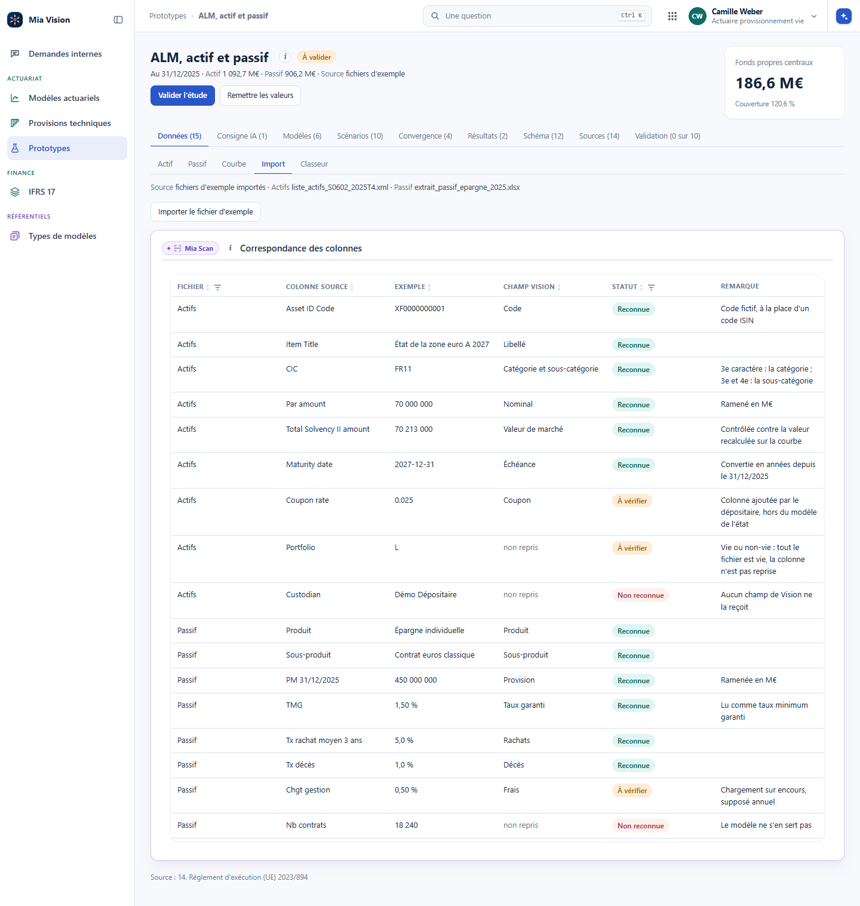
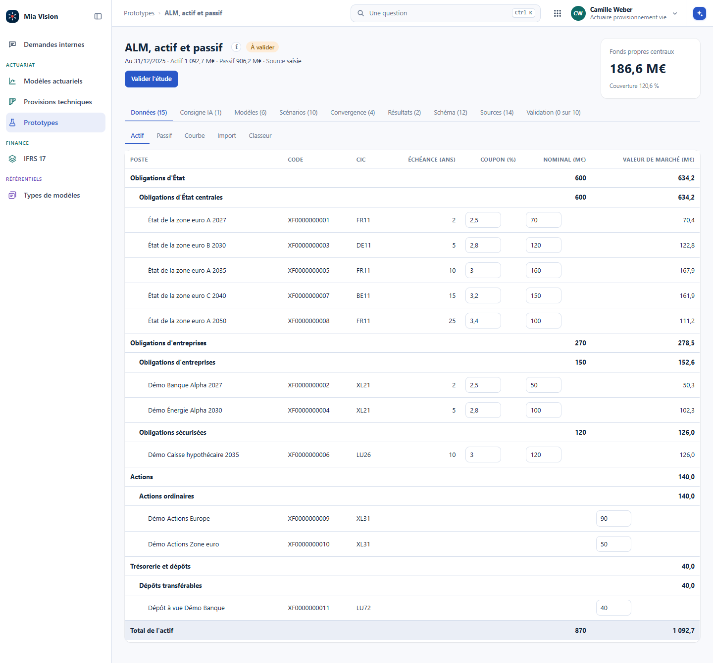
Les données : un portefeuille à une date suite
Dans Vision : #/alm?ong=donnees&part=import, puis « Importer le fichier d'exemple ». Les fichiers sont fictifs et la correspondance est écrite d'avance pour la formation. Un classeur mal rangé passe d'abord par le diagnostic du chapitre Un classeur bien rangé.
La consigne : décrire ce qu'on veut
Dans l'onglet Consigne IA, l'actuaire écrit ce qu'il veut : l'horizon, le nombre de simulations, les risques à tester, la contrainte à respecter. « Proposer » rend la proposition de Mia Chat, avec à côté ce qui a été demandé et pourquoi chaque choix est fait. Rien ne change avant « Appliquer la proposition », qui crée les versions de modèles qui manquent, ajoute les stress proposés et un calcul.
Fais une ALM du portefeuille.
L'horizon et le nombre de simulations sont pris par défaut, sans rachats dynamiques, sans inflation, sans stress. Et sans contrainte, rien ne dit quand le résultat est mauvais.
Horizon 10 ans, 1 000 simulations. Tester la hausse des taux avec des rachats dynamiques, une baisse des actions de 30 %, et l'inflation des frais. Contrainte : couverture du passif au-dessus de 105 % au quantile 0,5 %.
Chaque rubrique est reprise, des stress sont ajoutés un cran au-delà de la demande, et la contrainte est suivie dans les résultats.
La consigne : décrire ce qu'on veut suite
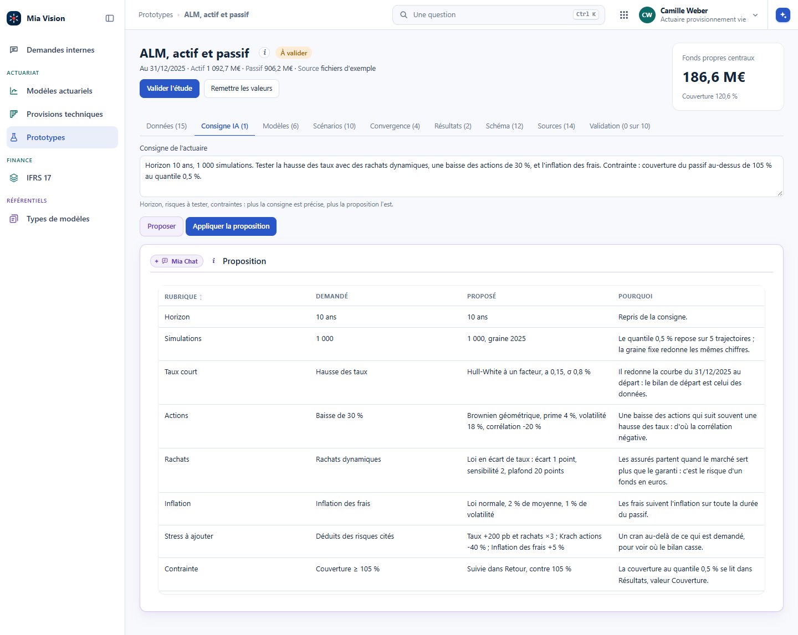
La consigne : décrire ce qu'on veut suite
Dans Vision : #/alm?ong=consigne. La proposition est écrite d'avance : des règles fixes lisent la consigne, aucun modèle de langue n'est appelé, et la page le dit. Le geste, lui, est celui qu'on aura avec un vrai assistant.
Effacez la consigne, écrivez seulement « Fais une ALM du portefeuille », puis « Proposer ». Qu'est-ce qui manque dans la proposition, et qu'est-ce qui le montre ?
Voir la réponse
L'horizon de 10 ans et les 1 000 simulations sont pris par défaut. Le taux court est ajouté quand même, parce que le passif est garanti. Mais il n'y a ni rachats dynamiques, ni inflation des frais, ni stress, ni contrainte, et la colonne « Demandé » affiche « Non précisé » sur chacune de ces lignes. La dernière ligne le résume : sans contrainte, rien ne dit quand le résultat est mauvais.
La validation : expliquer, puis valider
L'onglet Validation est le même dans toutes ces rubriques. Une ligne par stress et par calcul, ses fonds propres et leur écart au central, l'explication de l'actuaire et « Marquer revu » ; puis la conclusion. Le geste « Valider l'étude », en tête de page, demande ce que l'étude conclut, et garde qui a validé, quand, et l'empreinte des données : si une donnée change ensuite, la page affiche « Modifiée depuis la validation ».
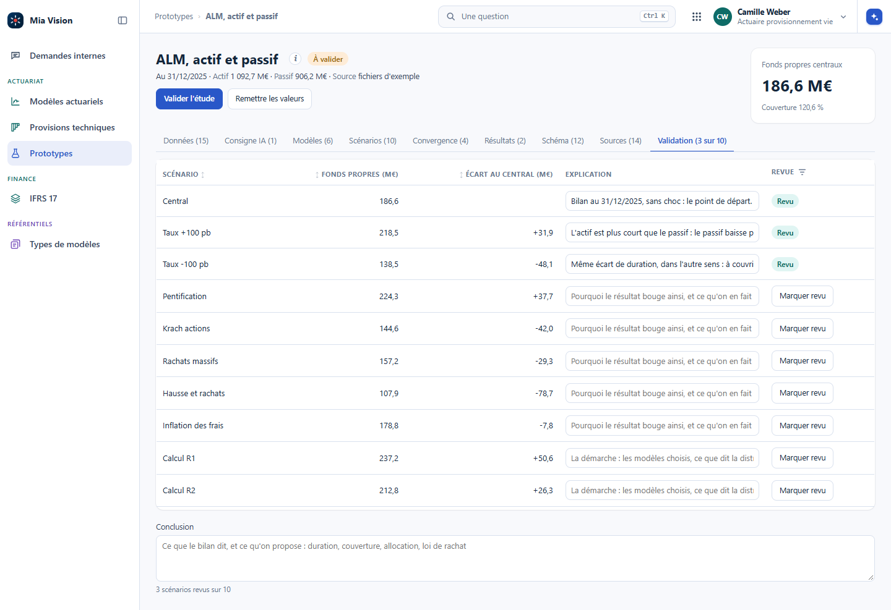
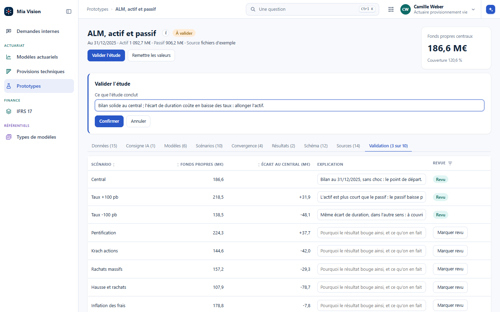
La validation : expliquer, puis valider suite
Dans Vision : #/alm?ong=validation.
Les fonds propres centraux valent 186,6 M€. Avec des taux à +100 pb, ils montent de 31,9 M€. Est-ce une bonne nouvelle, et qu'écrire dans l'explication ?
Voir la réponse
Ça dit surtout que l'actif est plus court que le passif : l'écart de duration est de -5,7 ans, donc le passif perd plus de valeur que l'actif quand les taux montent. Le même écart coûte 48,1 M€ quand les taux baissent de 100 pb. Et si la hausse des taux fait partir les assurés, le stress « Hausse et rachats » coûte 78,7 M€. L'explication écrit la cause, la duration, et ce qu'on en fait.
Ce qu'il faut garder
- L'IA prépare, propose et montre ; l'actuaire décrit, explique et valide.
- Le portefeuille de départ est daté, l'actuaire le maîtrise, et l'IA aide à le ranger dans les formats de Solvabilité II.
- Une consigne précise donne une proposition précise : l'horizon, les risques, la contrainte.
- Une validation garde qui, quand, pourquoi, et sur quelles données.
Sources
- Règlement d'exécution (UE) 2023/894 : modèles de reporting quantitatif, dont la liste des actifs S.06.02 et le code CIC ; remise en XML (XBRL) selon la taxonomie de l'EIOPA.
- Directive 2009/138/CE (Solvabilité II) : le bilan en valeur de marché, la mesure à 99,5 %.
2.3.2 Projeter : modèles versionnés, scénarios, distribution
Projeter, c'est faire tourner des modèles actuariels et économiques sur le portefeuille de départ. Chaque modèle a ses versions, rangées dans une table. Chaque valeur, le taux, les actions, les rachats, a plusieurs scénarios, qu'on mélange en calculs. On regarde la distribution des valeurs suivies, puis on revient sur les paramètres de départ avec les résultats en main, sous forme de suggestions.
- Un modèle, ses versions, dans une table
- Plusieurs scénarios par valeur, mélangés en calculs
- La distribution des valeurs suivies
- Le retour vers les paramètres
- Ce qu'il faut garder
- Sources
Un modèle, ses versions, dans une table
L'onglet Modèles est une table, une ligne par version : le numéro du modèle, sa version, la valeur qu'il pilote (le taux court, l'indice actions, la corrélation, l'inflation des frais, les rachats), la loi, l'auteur, la date, et un motif libre, comme « Calibrage de l'arrêté du 31/12/2025 ». La colonne Calculs dit quels calculs emploient la version, et une version employée est figée : la changer, c'est en créer une nouvelle, copiée de la précédente, avec son motif.
Un modèle, ses versions, dans une table suite
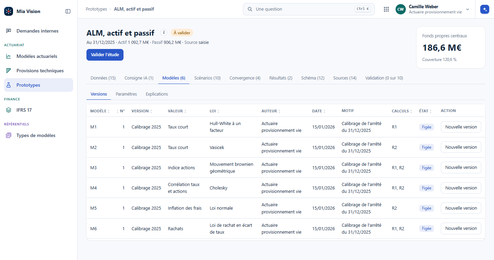
Un modèle, ses versions, dans une table suite
Dans Vision : #/alm?ong=modeles, puis Versions, Paramètres et Explications. Les paramètres de chaque version et les tables qui les rangent sont au chapitre Versionner les résultats.
Plusieurs scénarios par valeur, mélangés en calculs
Le générateur de scénarios tire des trajectoires pour chaque valeur : le taux court en Hull-White à un facteur, calé sur la courbe de départ, ou en Vasicek, avec sa propre courbe ; les actions en mouvement brownien géométrique ; la corrélation entre taux et actions par Cholesky ; l'inflation des frais ; des rachats qui montent quand le marché sert plus que le taux garanti. Un calcul choisit une version par valeur, un nombre de simulations, une graine et un horizon. C'est le côté stochastique, et l'IA aide à en faire beaucoup : « Proposer des combinaisons » rend des calculs à ajouter, chacun avec ce qu'il change et pourquoi.
Les modèles de ce générateur s'expliquent un par un, avec une illustration qu'on fait bouger, dans la rubrique Scénarios économiques de la bibliothèque : Vasicek pas à pas, Vasicek, CIR et Hull-White comparés, les actions, brownien ou sauts, et le générateur assemblé et son test de martingale.
Plusieurs scénarios par valeur, mélangés en calculs suite
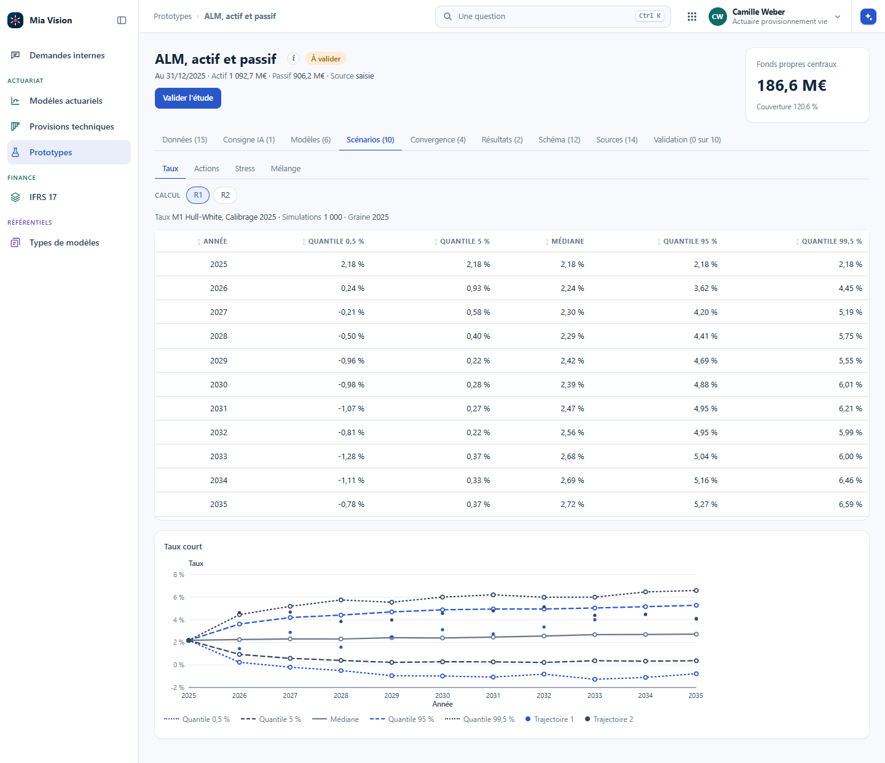
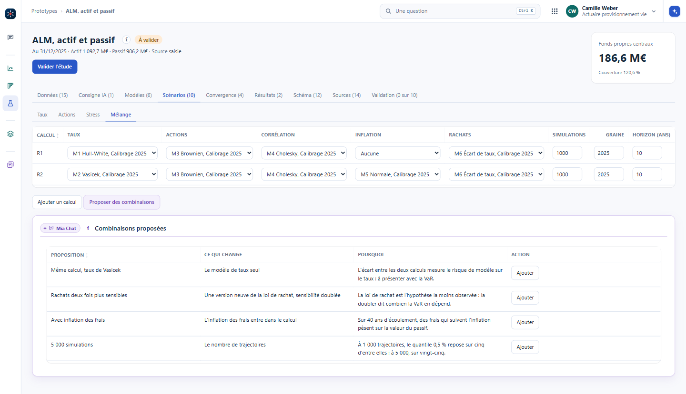
Plusieurs scénarios par valeur, mélangés en calculs suite
Dans Vision : #/alm?ong=scenarios, puis Taux, Actions, Stress et Mélange.
La distribution des valeurs suivies
L'onglet Résultats donne, pour chaque calcul, la distribution de la valeur suivie : les fonds propres actualisés, les fonds propres à l'horizon, la couverture ou la valeur du passif. Une ligne par calcul : le départ, la moyenne, l'écart-type, les quantiles, la VaR à 99,5 % et la probabilité de ruine ; puis l'histogramme et l'éventail année par année. L'onglet Stress met les stress déterministes à côté des quantiles stochastiques.
Le retour vers les paramètres
Les résultats renvoient vers le départ. L'onglet Retour propose des suggestions, chacune avec sa raison chiffrée, l'effet attendu, le champ qu'elle changerait et un bouton « Accepter ». Par exemple : l'écart de duration est de -5,7 ans, l'actif est plus court que le passif ; déplacer 340 M€ d'obligations courtes vers une obligation à 15 ans le ramène à -3,1 ans, et le coût d'une baisse des taux de 100 pb passe de 48,1 à 14,0 M€. Rien ne change avant l'accord de l'actuaire.
Le retour vers les paramètres suite
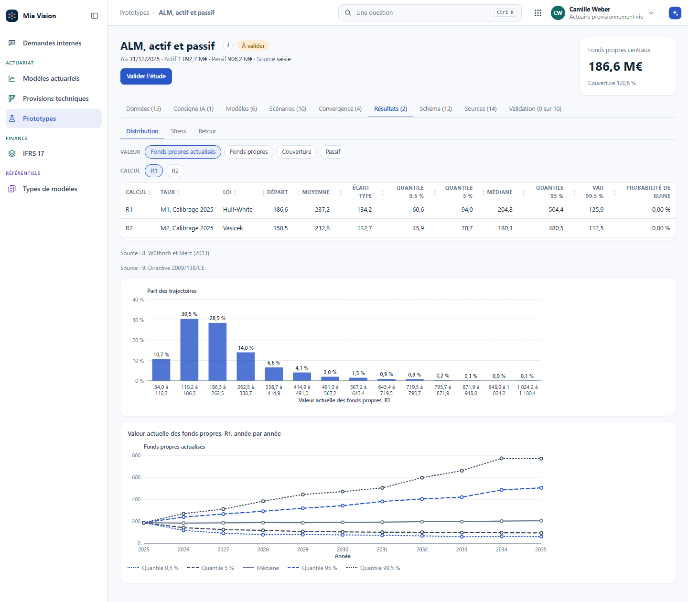
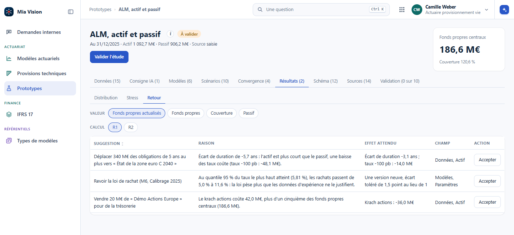
Le retour vers les paramètres suite
Dans Vision : #/alm?ong=resultats, puis Distribution, Stress et Retour.
Les calculs R1 et R2 tournent sur les mêmes données. R1 part de 186,6 M€ de fonds propres, R2 de 158,5 M€. Pourquoi deux points de départ, et que faut-il en dire ?
Voir la réponse
R1 prend Hull-White, calé sur la courbe du 31/12/2025 : il redonne le bilan des données. R2 prend Vasicek, qui a sa propre courbe et ne colle pas à celle du marché : le bilan de départ change de 28,1 M€. Cet écart est un risque de modèle. Il se montre à côté de la VaR, et c'est justement la première combinaison que propose Mia Chat.
La VaR à 99,5 % du calcul R1 vaut 125,9 M€ sur 1 000 simulations. Sur combien de trajectoires repose-t-elle ?
Voir la réponse
Sur 5 trajectoires, celles qui tombent sous le quantile 0,5 %. C'est peu : la combinaison « 5 000 simulations » en donne 25. Le chapitre Monte-Carlo montre ce que coûte la précision, et ce que plus de simulations n'achète pas.
Ce qu'il faut garder
- Un modèle a ses versions dans une table : la valeur pilotée, les paramètres, qui, quand, et un motif libre.
- Un calcul est un mélange de versions, une graine et un nombre de simulations ; l'IA aide à en proposer beaucoup.
- On regarde la distribution de la valeur suivie, pas seulement sa moyenne.
- Les résultats reviennent vers les paramètres de départ comme des suggestions, que l'actuaire accepte ou non.
Sources
- Vasicek, O. (1977), An equilibrium characterization of the term structure, Journal of Financial Economics 5(2), 177-188.
- Hull, J. et White, A. (1990), Pricing interest-rate-derivative securities, Review of Financial Studies 3(4), 573-592.
- Black, F. et Scholes, M. (1973), The pricing of options and corporate liabilities, Journal of Political Economy 81(3), 637-654.
- Glasserman, P. (2003), Monte Carlo Methods in Financial Engineering, Springer : les normales corrélées par Cholesky.
- Wüthrich, M. V. et Merz, M. (2013), Financial Modeling, Actuarial Valuation and Solvency in Insurance, Springer.
- Règlement délégué (UE) 2015/35 : meilleure estimation et courbe sans risque, chocs de taux (articles 166 et 167), d'actions (articles 168 et 169) et de rachat (article 142).
- EIOPA, documentation technique de la courbe des taux sans risque (méthode Smith-Wilson).
2.3.3 Monte-Carlo : un générateur n'est jamais aléatoire
Une série pseudo aléatoire n'est jamais aléatoire : c'est une suite fixe, qui finit par se répéter. Un actuaire qui passe d'un million à dix millions de simulations parce que son calcul ne converge pas n'a rien gagné si le cycle du générateur fait un million : il relit dix fois le même cycle. On le rencontre dans des logiciels de simulation, et quelques tests suffisent pour s'en rendre compte.
- Une suite fixe, et qui se répète
- 1/√N : ce que coûte la précision
- Tirer mieux : Halton et Sobol'
- Des tests pour s'en rendre compte
- Ce qu'il faut garder
- Sources
Une suite fixe, et qui se répète
Même graine, mêmes tirages : c'est ce qui rend un calcul reproductible, et le chapitre Versionner les résultats en fait une règle. Mais c'est aussi la preuve que rien n'y est aléatoire. Un générateur congruentiel calcule chaque tirage à partir du précédent, \(x_{n+1} = (a\,x_n + c) \bmod m\) : il ne peut prendre que \(m\) valeurs, donc il repart sur le même cycle au plus tard après \(m\) tirages. Passé ce point, des tirages de plus ne disent rien de neuf, et l'erreur cesse de baisser.
L'onglet Convergence de l'ALM le montre sur une cible dont on connaît la valeur exacte, donc l'erreur vraie. Un générateur court, de période 4 096, contre un générateur à longue période. Chaque tirage prend deux nombres uniformes : au-delà de 2 048 tirages, la suite courte se répète. Son erreur reste bloquée à 0,01793 de 4 096 à 262 144 tirages, alors que celle de l'autre générateur continue de baisser.
1/√N : ce que coûte la précision
Même avec un bon générateur, l'erreur d'une moyenne de Monte-Carlo baisse comme \(1/\sqrt{N}\). Dix fois plus de simulations ne la divisent que par \(\sqrt{10}\), soit 3,16 environ ; la diviser par dix demande cent fois plus de simulations. Dans Vision, l'erreur quadratique moyenne sur dix graines passe de 0,0958 à 100 tirages à 0,0032 à 100 000 tirages, et la courbe suit la droite \(1/\sqrt{N}\).
1/√N : ce que coûte la précision suite
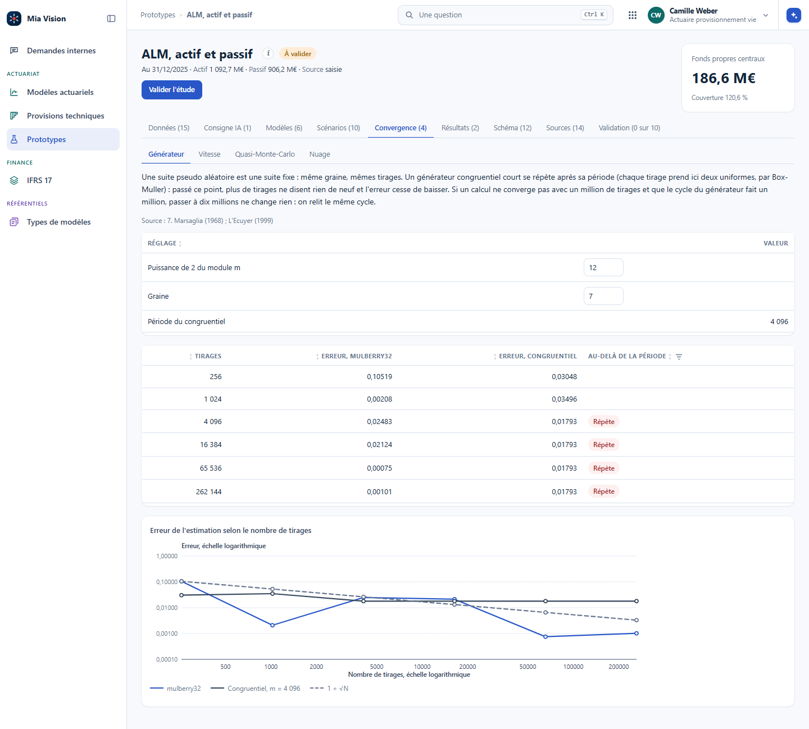
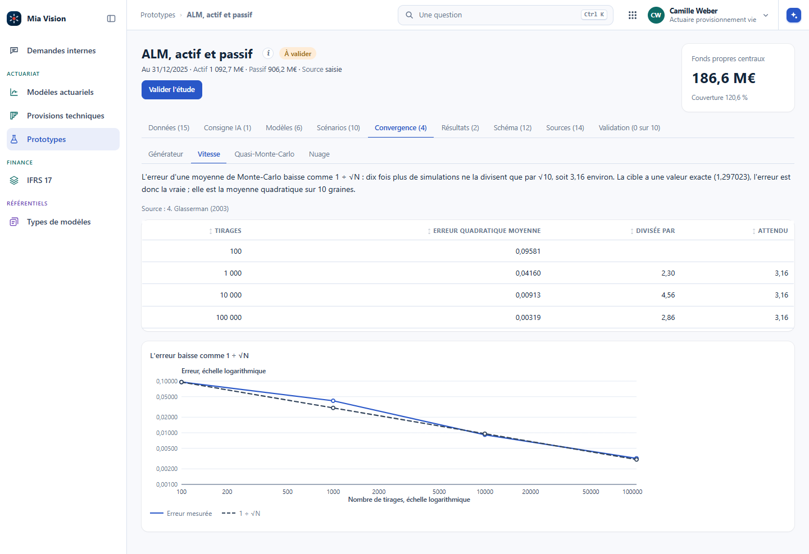
1/√N : ce que coûte la précision suite
Dans Vision : #/alm?ong=convergence, puis Générateur et Vitesse. La puissance de 2 du module et la graine se changent dans la case : un module plus petit raccourcit la période, et l'erreur se bloque plus tôt.
Tirer mieux : Halton et Sobol'
Les suites de Halton et de Sobol' remplacent le hasard par des points construits pour remplir l'intervalle de façon régulière. Sur une cible lisse, leur erreur baisse presque comme \(1/N\), bien plus vite que \(1/\sqrt{N}\). Dans Vision, à 65 536 tirages, l'erreur passe de 0,00585 en pseudo aléatoire à 0,00002 avec Sobol'. Sur mille points du carré, le pseudo aléatoire laisse 36 cases vides sur une grille de 20 × 20 ; Sobol' n'en laisse aucune. Les conditions de ce gain, la dimension, la régularité, l'intervalle de confiance, sont au chapitre Versionner les résultats.
Tirer mieux : Halton et Sobol' suite
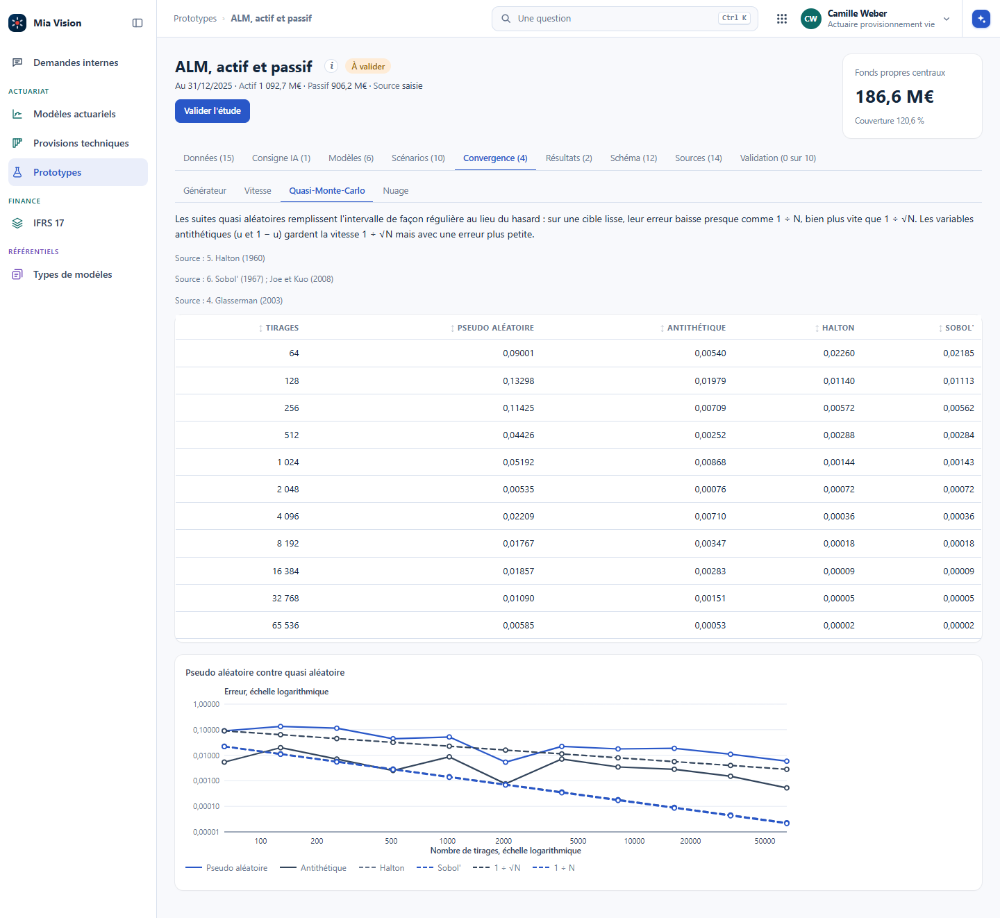
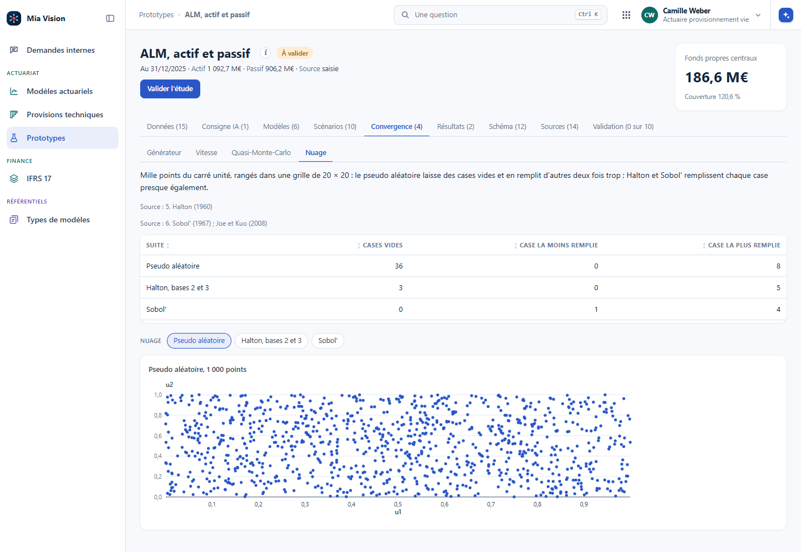
Tirer mieux : Halton et Sobol' suite
Dans Vision : #/alm?ong=convergence, puis Quasi-Monte-Carlo et Nuage.
Des tests pour s'en rendre compte
Ces propriétés ne se croient pas sur parole, elles se testent, et chaque test tient en quelques lignes que l'IA écrit très bien.
- La période du générateur
La documentation de l'outil la donne. On la compare au nombre de tirages du calcul : les simulations multipliées par les tirages de chaque simulation.
- Une cible dont on connaît la valeur
Faire tourner le même code sur un cas dont le résultat exact est connu, pour lire l'erreur vraie, et pas seulement l'écart entre deux lancements.
- Doubler, puis décupler
Mesurée sur plusieurs graines, si l'erreur ne baisse pas d'environ \(\sqrt{2}\), puis de \(\sqrt{10}\), quelque chose cloche : une période trop courte, un tirage réutilisé, un bug.
- Changer la graine
Si le résultat bouge plus que l'erreur annoncée, l'erreur est sous-estimée.
Des tests pour s'en rendre compte suite
Votre outil a un générateur de période un million. Chaque simulation tire un nombre par année sur dix ans. Le calcul ne converge pas à 100 000 simulations, et un collègue propose de passer à 1 million. Qu'en pensez-vous ?
Voir la réponse
À 100 000 simulations de dix tirages, on consomme déjà le million de tirages du cycle. Au-delà, on relit le même cycle : 1 million de simulations, c'est dix fois les mêmes trajectoires, et l'erreur ne bouge plus. Il faut un générateur de bien plus longue période, puis, si la cible est lisse, une suite de Sobol' pour converger plus vite.
Avec un bon générateur, combien de simulations faut-il pour diviser l'erreur par dix ?
Voir la réponse
Cent fois plus, puisque l'erreur baisse comme \(1/\sqrt{N}\). Avec une suite de Sobol' sur une cible lisse, l'erreur baisse presque comme \(1/N\) : environ dix fois plus suffisent.
Le test de martingale d'un générateur de scénarios en est l'application directe : la fiche E4 de la bibliothèque le montre, intervalle à 95 % compris, avec l'erreur qu'il attrape.
Ce qu'il faut garder
- Une suite pseudo aléatoire est fixe et cyclique : au-delà de sa période, plus de simulations ne disent rien de neuf.
- L'erreur baisse comme \(1/\sqrt{N}\) : la précision coûte cher, de plus en plus cher.
- Halton et Sobol' convergent plus vite sur une cible lisse.
- Ces propriétés se testent : la période, une cible connue, doubler, changer la graine.
Sources
- Marsaglia, G. (1968), Random numbers fall mainly in the planes, PNAS 61(1), 25-28 ; L'Ecuyer, P. (1999), Tables of linear congruential generators of different sizes and good lattice structure, Mathematics of Computation 68(225), 249-260.
- Glasserman, P. (2003), Monte Carlo Methods in Financial Engineering, Springer : la vitesse de convergence, la réduction de variance, le quasi-Monte-Carlo.
- Halton, J. H. (1960), On the efficiency of certain quasi-random sequences of points in evaluating multi-dimensional integrals, Numerische Mathematik 2, 84-90.
- Sobol', I. M. (1967), On the distribution of points in a cube and the approximate evaluation of integrals, USSR Computational Mathematics and Mathematical Physics 7(4), 86-112 ; Joe, S. et Kuo, F. Y. (2008), Constructing Sobol sequences with better two-dimensional projections, SIAM Journal on Scientific Computing 30(5), 2635-2654.
2.3.4 Calculer à la volée ou préparer à l'avance
Il y a deux façons de servir des résultats à quelqu'un qui veut changer une valeur et voir la conséquence : calculer à la volée, ou préparer à l'avance. Le choix décide de ce qu'il faut derrière la page.
- Deux façons de servir des résultats
- L'exemple : la volatilité de Vasicek
- Choisir
- Questions
- Ce qu'il faut garder
Deux façons de servir des résultats
On change une valeur et on veut le résultat tout de suite. Il faut alors, malheureusement, un serveur derrière : un ordinateur qui fait le calcul à chaque demande.
On prépare des scénarios et leurs résultats pour des valeurs choisies, et on les stocke. Plus besoin de serveur : un fichier HTML suffit, tout est déjà calculé. Des calculs très simples, comme un écart ou une somme, peuvent encore se faire dans la page.
L'exemple : la volatilité de Vasicek
Prenons la volatilité du taux court dans un modèle de Vasicek. Derrière, il faut un Monte-Carlo pour avoir les fonds propres associés : un ordinateur tourne. Une page HTML statique ne calcule rien de tel. Si on l'envoie, comme on enverrait un Excel, avec une liste déroulante, on ne peut pas laisser choisir n'importe quelle valeur : seulement celles dont les résultats ont été calculés avant. « J'ai préparé pour vous, pour ces valeurs-là, voilà les résultats. »
La page ci-dessous fait exactement cela. Les fonds propres à dix ans de l'ALM de Vision ont été calculés une fois, par le moteur de l'ALM lui-même, pour quelques volatilités choisies. Le même modèle, la même graine que l'écran. La page montre la distribution de celle qu'on choisit, et dit qu'une autre valeur demande un nouveau calcul. Elle s'ouvre sans connexion.
L'exemple : la volatilité de Vasicek suite
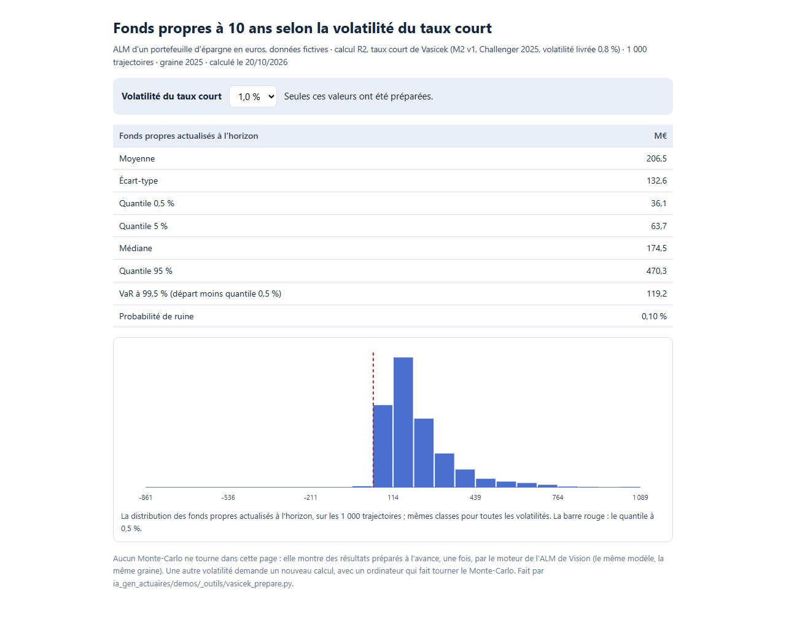
L'exemple : la volatilité de Vasicek suite
Dans Vision, le Monte-Carlo de l'ALM, mille à deux mille trajectoires, tourne dans la page elle-même : le navigateur est l'ordinateur, ce qui suffit à cette taille, alors que des millions de trajectoires demandent un serveur ou un calcul préparé.
Fais tourner le modèle pour ces cinq volatilités, avec la graine fixée, et garde pour chacune la distribution des fonds propres à l'horizon. Écris une page HTML autonome, sans serveur ni bibliothèque, avec une liste déroulante de ces seules valeurs, les quantiles et un histogramme. Écris dans la page la date du calcul et la graine, et qu'une autre valeur demande un nouveau calcul.
Choisir
Le calcul préparé suffit quand les valeurs qu'on regarde sont connues à l'avance : un comité, un rapport, une liste de sensibilités. Le calcul à la volée sert quand on explore, et qu'on ne sait pas encore quelles valeurs on voudra. Les deux se combinent : on explore à la volée, puis on prépare et on stocke les valeurs retenues, avec leur jeu d'entrées, comme au chapitre La traçabilité : des jeux d'entrées et leurs résultats.
Questions
- Le comité demande la volatilité à 1,2 %, absente de la liste. Que répondez-vous ?
Voir la réponse
Qu'elle n'a pas été calculée, et qu'on la prépare : un nouveau calcul, la même graine, et la page refaite avec une valeur de plus. Interpoler entre 1 % et 1,5 % dans la page donnerait un chiffre qu'aucun Monte-Carlo n'a produit, et la VaR ne varie pas en ligne droite.
- Pourquoi la page dit-elle la date du calcul et la graine ?
Voir la réponse
Parce que ce sont les entrées du calcul qu'elle montre. Avec elles, n'importe qui refait les mêmes chiffres ; sans elles, la page est une affirmation qu'on ne peut pas vérifier.
Ce qu'il faut garder
- Calculer à la volée demande un serveur ; préparer à l'avance n'en demande pas, un fichier HTML suffit.
- Une page préparée ne propose que les valeurs calculées, et dit sa date et sa graine.
- Des calculs très simples peuvent se faire dans la page ; un Monte-Carlo de taille réelle, non.
2.3.5 D'autres domaines, le même parcours
Le parcours de l'ALM sert ailleurs : des données, des modèles, des scénarios, des résultats, puis l'explication et la validation de l'actuaire, avec les mêmes onglets Schéma, Sources et Validation. Pendant la formation, on en a construit sur l'épargne en euros, le transport de marchandises et la responsabilité civile des avocats. Chacun porte une idée à retenir.
- Épargne : le taux servi et la provision pour participation
- Tarification du transport de marchandises
- Professions réglementées : la RC professionnelle des avocats
- Ce qu'il faut garder
- Sources
Épargne : le taux servi et la provision pour participation
Chaque année, le portefeuille produit un résultat financier. La participation minimale vaut 85 % du résultat financier et 90 % du résultat technique, dans une règle simplifiée. La stratégie fixe le taux servi, jamais sous le taux garanti : servir tout le rendement, lisser avec la provision pour participation aux bénéfices (PPB), s'aligner sur le marché, ou servir le minimum. L'écart entre le minimum et ce qui est servi va à la PPB ou en sort, et une dotation non reprise au bout de huit ans est servie de force. Quand le taux servi passe sous celui du concurrent, les rachats montent.
Avec la stratégie « Lisser avec la PPB » à 2,5 %, au scénario central, la marge cumulée sur dix ans vaut +42,2 M€ et la PPB passe de 40 à 64,9 M€. Avec « Aligner sur le marché » et des taux à +150 pb, la marge reste positive, +11,9 M€, mais la PPB est vide dès 2030.
Épargne : le taux servi et la provision pour participation suite
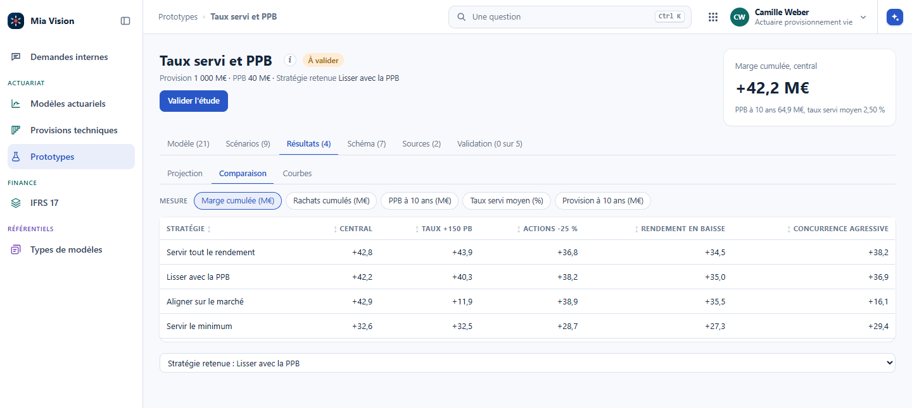
Épargne : le taux servi et la provision pour participation suite
Dans Vision : #/taux-servi?ong=resultats&part=comparaison, au poste d'actuaire provisionnement vie. L'idée à retenir : la PPB est une réserve qui amortit les bonnes et les mauvaises années ; la stratégie qui garde les clients peut la vider quand les taux montent.
Tarification du transport de marchandises
Le tarif se construit par segment, un mode de transport et une marchandise : une fréquence par million d'euros expédié, et un coût de sinistre de loi exponentielle, payé entre la franchise et le plafond par expédition. Un segment qui a peu de sinistres ne se tarife pas seul : la crédibilité mêle son taux et celui du portefeuille, avec un poids \(z = \dfrac{n}{n + k}\). Le taux commercial ajoute les frais, la marge et la réassurance.
Au scénario central, le S/P vaut 65,1 % contre 62 % d'équilibre : le tarif doit monter de 5,0 %. Avec une sinistralité à +20 %, le S/P passe à 78,1 %. Avec une avarie commune, il passe à 112,4 % et la hausse nécessaire à 81,3 %.
Tarification du transport de marchandises suite
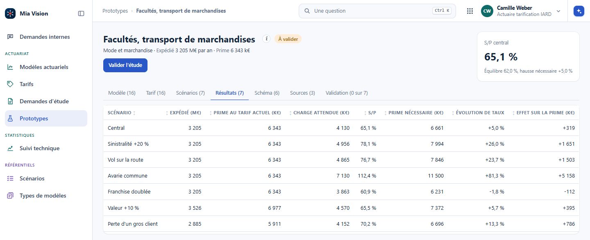
Tarification du transport de marchandises suite
Dans Vision : #/transport?ong=resultats, au poste d'actuaire tarification IARD. L'idée à retenir : un seul événement peut peser plus que tous les petits sinistres, et un segment trop petit emprunte la crédibilité du portefeuille.
Professions réglementées : la RC professionnelle des avocats
L'exposition est le montant des honoraires. La fréquence dépend de la profession, avocat, notaire ou expert-comptable, et de la taille du cabinet. Le coût d'un sinistre suit une loi de Pareto, à queue épaisse ; le coût sous un plafond vient de la valeur espérée limitée, et les coefficients de plafond passent d'un plafond à un autre. La garantie est en base réclamation : la charge d'un exercice se paie sur plusieurs années, avec l'inflation judiciaire, et la prime pure est actualisée.
Le taux moyen vaut 6,51 ‰ des honoraires et le S/P central 77,0 %. Avec un sinistre sériel, un même montage conseillé par beaucoup de cabinets, le S/P passe à 110,1 % et le tarif doit monter de 39,5 %.
Professions réglementées : la RC professionnelle des avocats suite
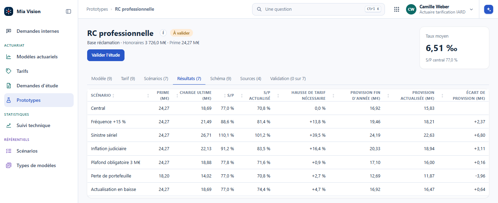
Professions réglementées : la RC professionnelle des avocats suite
Dans Vision : #/rc-professionnelle?ong=resultats, au poste d'actuaire tarification IARD. L'idée à retenir : dans une branche longue, le risque est le sériel et le temps, un même conseil qui se répète et une charge qui se paie sur des années.
Transport : pourquoi l'avarie commune est-elle un scénario à part, et pas une hausse de fréquence de plus ?
Voir la réponse
C'est un seul événement en mer qui touche toutes les marchandises du navire, abîmées ou non : chacune contribue au sacrifice fait pour sauver le navire, selon les règles d'York et d'Anvers. Une hausse de fréquence répartit le choc sur tout le portefeuille ; l'avarie commune le concentre. Dans Vision, cette contribution unique fait passer le S/P de 65,1 % à 112,4 %.
Taux servi : « Aligner sur le marché » garde une marge positive même avec des taux à +150 pb. Où est le problème ?
Voir la réponse
La marge tient parce que la PPB paie l'écart avec le concurrent. Elle est vide dès 2030 : l'année suivante, il n'y a plus de réserve pour lisser, et le taux servi décroche, ou la marge paie seule. La stratégie se juge sur la marge et sur la PPB qui reste.
Ce qu'il faut garder
- Le même parcours sert chaque domaine : données, modèles, scénarios, résultats, validation.
- Épargne : la PPB amortit ; une stratégie se juge sur la marge et sur la réserve qui reste.
- Transport : la crédibilité pour les petits segments, et l'événement unique qui pèse plus que tout le reste.
- RC professionnelle : la queue épaisse, le sériel, et le temps d'une branche longue.
Sources
- Code des assurances, articles A132-10 et suivants : participation aux bénéfices minimale et reprise de la PPB dans les huit ans.
- Règlement délégué (UE) 2015/35 : risque de rachat (article 142), meilleure estimation et courbe sans risque.
- Bühlmann, H. (1967), Experience rating and credibility, ASTIN Bulletin 4(3), 199-207 ; Bühlmann, H. et Gisler, A. (2005), A Course in Credibility Theory and its Applications, Springer.
- Klugman, S. A., Panjer, H. H. et Willmot, G. E., Loss Models: From Data to Decisions, Wiley : loi de coût entre franchise et plafond, loi de Pareto et valeur espérée limitée.
- Règles d'York et d'Anvers (Comité Maritime International, 2016) : l'avarie commune.
- Miccolis, R. S. (1977), On the theory of increased limits and excess of loss pricing, Proceedings of the Casualty Actuarial Society 64.
- Loi n° 71-1130 du 31 décembre 1971, article 27 : l'assurance de responsabilité civile professionnelle obligatoire des avocats.
2.4 Atelier : explorer puis modéliser la fréquence
On reprend la donnée du matin et on va jusqu'au modèle de fréquence. D'abord l'exploration, rangée et tracée, puis un modèle de Poisson comparé à plus simple, puis la validation. À chaque transition, on demande la critique avant de passer à la suite : c'est le geste qu'on veut voir devenir automatique.
- Explorer : une description, pas une conclusion
- Modéliser : l'intention, puis des petits pas
- Le défi : le GLM à la main, puis avec l'assistant
- Ce qui fait échouer
- Évaluation des acquis
Explorer : une description, pas une conclusion
La posture. L'assistant n'a pas vu la donnée. On lui en donne juste assez pour aider à la comprendre : le schéma, un échantillon, les statistiques. Jamais le fichier.
Explorer : une description, pas une conclusion suite
- Délimiter
Quel grain (une ligne, un contrat sur une période), quelle date d'extraction, qui est propriétaire de la donnée. C'est vite fait, et cela évite la confusion pour toute la suite.
- Préparer ce qu'on donne
Le schéma avec types et sens métier, quelques lignes, les statistiques par colonne, les taux de vide.
- Demander une description
La structure, les anomalies probables, des angles d'analyse cohérents avec l'intention de modéliser la fréquence.
- Faire produire les premières vues
La fréquence observée par variable candidate, avec l'exposition en regard. Ce qu'il aurait fallu coder sort en quelques secondes.
- Critiquer ce qui ressort
« Qu'est-ce qui te semble suspect ou contre-intuitif ? Quelles questions poserais-tu avant de modéliser ? » Sur freMTPL2freq, il doit trouver les expositions supérieures à un an et les contrats à nombre de sinistres très élevé : deux choses à décider, et à écrire, avant tout modèle.
Les chiffres à retrouver
1 224 contrats ont une exposition supérieure à un an, jusqu'à 2,01 ans.
ClaimNbmonte jusqu'à 16, et 9 contrats dépassent 4 sinistres. - Tracer
Les vues et les décisions de préparation dans le carnet, figé avec sa date. Le chapitre Comprendre une donnée nouvelle dit pourquoi chaque décision s'écrit.
Modéliser : l'intention, puis des petits pas
La posture. Décrire l'intention, jamais le code, et fragmenter. La fragmentation n'est pas une précaution de débutant : c'est ce qui permet de défendre chaque ligne en revue.
Modéliser : l'intention, puis des petits pas suite
- Cadrer l'intention en une phrase
Je veux modéliser la fréquence de sinistres de ce portefeuille, avec l'exposition en offset, à partir de l'âge du conducteur, du bonus-malus, de la zone et de l'âge du véhicule.
Si la phrase ne vient pas, l'intention n'est pas claire : on s'arrête là.
- Décomposer
Préparer les variables (découpage de l'âge, regroupement des modalités rares), ajuster le GLM de Poisson, sortir les diagnostics. Une étape par demande.
- Demander la critique à chaque transition
Les hypothèses implicites, la surdispersion, les cas où l'approche tombe en défaut. Avant l'étape suivante, pas à la fin.
- Vérifier la cohérence métier
Le signe et l'ordre de grandeur de chaque coefficient, lus contre la table des fréquences brutes par tranche, calculée avant le modèle. On lit la table, on n'y plaque pas un profil attendu.
Les chiffres à retrouver
Par bonus-malus, la fréquence monte nettement : 8,0 % à 50, 9,5 % de 51 à 60, 13,3 % de 61 à 80, 17,8 % de 81 à 100, 37,6 % au-delà. Par âge du conducteur, elle baisse fort chez les jeunes : 24,9 % de 18 à 20 ans, 16,1 % de 21 à 25, 10,6 % de 26 à 30. Elle reste ensuite entre 9,0 et 10,4 %, avec une bosse à 10,4 % de 41 à 50 ans et 9,2 % au-delà de 80 ans. La remontée aux grands âges du profil en U, en brut, est faible.
- Comparer à plus simple, puis à plus complexe
Une moyenne par segment d'abord, un modèle d'apprentissage en challenger ensuite. C'est l'écart qui justifie la complexité, dans un sens comme dans l'autre.
- Valider et persister
La calibration par décile sur l'échantillon de test. Puis on enregistre, dans un dossier daté, les paramètres, les prédictions, les métriques, la graine et la version du code. Le chapitre Versionner les résultats, demain matin, en fait une exécution qu'on retrouve par son identifiant.
Le défi : le GLM à la main, puis avec l'assistant
Ceux qui ont déjà écrit un GLM de fréquence le refont à la main, les autres le font écrire. On compare les deux modèles coefficient par coefficient. Les écarts viennent souvent de la préparation, pas du modèle : un offset oublié, une modalité de référence différente, un découpage d'âge fait autrement. C'est la leçon, et elle vaut pour toute relecture de code produit par l'IA.
Ce qui fait échouer
- Coller le fichier dans la conversation.
- Le prompt qui demande tout d'un coup, de l'exploration au modèle validé.
- Prescrire l'implémentation au lieu de dire l'intention.
- Accepter la première proposition, et sauter la comparaison au modèle simple.
Évaluation des acquis
Les questions se posent à la salle avant d'ouvrir la réponse. Elles servent d'évaluation des acquis, celle que le programme annonce.
- Pourquoi l'exposition entre-t-elle en offset, et pas comme une variable explicative ?
Voir la réponse
Parce qu'on sait comment elle agit : à risque égal, deux fois plus d'exposition donne deux fois plus de sinistres attendus. L'offset \(\log(\text{Exposure})\) impose ce coefficient de un au lieu de le laisser estimer, et le modèle porte bien sur une fréquence.
- Le challenger fait un peu mieux que le GLM sur le test. Faut-il le garder ?
Voir la réponse
Pas sur ce seul critère. On regarde où il fait mieux, si l'écart tient sur un autre échantillon, et si on sait l'expliquer à qui validera le tarif. Souvent, il sert surtout à montrer une interaction que le GLM a manquée, et qu'on ajoute au GLM.
- L'assistant propose d'ajouter le nombre de sinistres de l'année comme variable. Qu'en dites-vous ?
Voir la réponse
C'est une fuite : la variable contient la cible. Le modèle paraît excellent et ne sert à rien au moment de tarifer. Le chapitre Modéliser range ce biais avec ceux qui ne se voient pas dans les indicateurs.